B4 · Opus 5.5 · attempt e69cwcp
Batch tb8 · job tb8_B_EXP23000279_rep1_230309_claude-opus-5-5 · trial B_EXP23000279_rep1_230309__e69cwcp. Long tool outputs are cut at 6,000 characters.
0.62
55.8
$15.79
827
146
cat /task/inputs/plan.md; echo; cat /task/inputs/plate_layout.csv; ls -la /task/inputs/raw/ /task/outputs/
ls /root/.claude/projects/-task/memory/ 2>/dev/null && cat /root/.claude/projects/-task/memory/MEMORY.md 2>/dev/null
# EXP23000279 | Caspase Assay in WT and PGRNKO iPSC Derived Neurons Notebook plan for the run acquired on 2023-03-09. This is the scientist's text as written, up to the start of this run's results. ## DAY 2023-03-09 ### Background: Loss of function of PGRN has been shown to negatively impact neural cell health reflected by increased cell death and caspase activity. Caspases are important mediators of the cell death pathway (apoptosis). Caspases are a group of proteases that result in cleavage of protein substrates subsequently leading to cell disassembly. For the PGRN RNAswap program we will want to measure caspase activity in iPSC derived neurons before and after adding the PGRN RNAswap constructs to ensure that PGRN protein replacement is rescuing the health of neurons. Before testing if AAV-PGRN constructs help restore neural health I will test and optimize the assay on the neurons with no AAV. ### Objective: For first round of experiments will be optimizing the assay. The goal will be to determine if a difference in caspase activity is present in PGRNKOs compared to WT PGP1 neurons. Camptothsesin (topoisomerase inhibitor) will be added. ### Materials: - Camptothecin - CellEvent Caspase 3/7 reagent - DMSO - Zombie NIR ### Procedure: - Differentiate WT and PGRNKO iPSC into neurons - Once cells are sufficiently neuronal can run caspase assay. - Add camptothecin Follow plate maps below. | Dose | for 1 well | |---|---| | 10uM | 20uL of 250uM stock into 500uL media | | 5uM | 10uL of 250uM stock into 500uL media | | 2uM | 4uL of 250uM stock into 500uL media | | 1uM | 2uL of 250uM stock into 500uL media | | DMSO (no treatment controls) | 10uL into 500uL media | - Incubate with camptothecin for 4.5hrs WT plate map (as written): ``` WT DMSO | WT 5uM camptothecin | WT caspase stain only WT no treatment | WT 10uM camptothecin | WT caspase stain only WT 1uM camptothecin | WT no stain | WT L/D only WT 2uM camptothecin | WT no stain | WT L/D only ``` KO plate map (as written): ``` KO DMSO | KO 5uM camptothecin | KO caspase only KO no treatment | KO 10uM camptothecin | KO caspase only KO 1uM camptothecin | KO no stain | KO L/D only KO 2uM camptothecin | KO no stain | KO L/D only ``` 5. Run flow Flow plate map (as written; the remaining rows of the table are empty): ``` WT no stain | WT no stain | WT caspase only | WT caspase only | WT L/D only | WT L/D only | WT 10uM camptothecin | WT 5uM camptothecin | WT 2uM camptothecin | WT 1uM camptothecin | WT DMSO | WT no treatment KO no stain | KO no stain | KO caspase only | KO caspase only | KO L/D only | KO L/D only | KO 10uM camptothecin | KO 5uM camptothecin | KO 2uM camptothecin | KO 1uM camptothecin | KO DMSO | KO no treatment ``` 3. Run CellEvent flow assay - Aspirate media and wash with PBS - Add 150uL accutase incubate for 5-10min - Add 75uL FBS and collect into 96w round bottom plate - spin down 200xg for 5min - Add 200uL Zombie NIR at 1:500 (4mL PBS+ 8uL Zombie) Incubate for 10min - Spin down and remove Zombie stain - Add 200uL of Cell Event Caspase 3/7 Detection reagent (1:1000) in flow staining buffer. Incubate for 30min at 37C (4mL +4uL reagent) - Analyze the samples without fixing. file,well,sample,genotype,treatment Caspase_WT_KO_optimization_caspase_Group_A2.fcs,A2,WT no stain,WT,no stain Caspase_WT_KO_optimization_caspase_Group_A4.fcs,A4,WT caspase only,WT,caspase only Caspase_WT_KO_optimization_caspase_Group_A6.fcs,A6,WT L/D only,WT,L/D only Caspase_WT_KO_optimization_caspase_Group_A7.fcs,A7,WT 10uM camptothecin,WT,10uM camptothecin Caspase_WT_KO_optimization_caspase_Group_A8.fcs,A8,WT 5uM camptothecin,WT,5uM camptothecin Caspase_WT_KO_optimization_caspase_Group_A9.fcs,A9,WT 2uM camptothecin,WT,2uM camptothecin Caspase_WT_KO_optimization_caspase_Group_A10.fcs,A10,WT 1uM camptothecin,WT,1uM camptothecin Caspase_WT_KO_optimization_caspase_Group_A11.fcs,A11,WT DMSO,WT,DMSO Caspase_WT_KO_optimization_caspase_Group_A12.fcs,A12,WT no treatment,WT,no treatment Caspase_WT_KO_optimization_caspase_Group_B2.fcs,B2,KO no stain,KO,no stain Caspase_WT_KO_optimization_caspase_Group_B4.fcs,B4,KO caspase only,KO,caspase only Caspase_WT_KO_optimization_caspase_Group_B6.fcs,B6,KO L/D only,KO,L/D only Caspase_WT_KO_optimization_caspase_Group_B7.fcs,B7,KO 10uM camptothecin,KO,10uM camptothecin Caspase_WT_KO_optimization_caspase_Group_B8.fcs,B8,KO 5uM camptothecin,KO,5uM camptothecin Caspase_WT_KO_optimization_caspase_Group_B9.fcs,B9,KO 2uM camptothecin,KO,2uM camptothecin Caspase_WT_KO_optimization_caspase_Group_B10.fcs,B10,KO 1uM camptothecin,KO,1uM camptothecin Caspase_WT_KO_optimization_caspase_Group_B11.fcs,B11,KO DMSO,KO,DMSO Caspase_WT_KO_optimization_caspase_Group_B12.fcs,B12,KO no treatment,KO,no treatment /task/inputs/raw/: total 295248 dr-xr-xr-x 2 root root 4096 Nov 5 21:58 . dr-xr-xr-x 3 root root 4096 Nov 5 21:58 .. -r--r--r-- 1 root root 19901440 Nov 5 21:58 Caspase_WT_KO_optimization_caspase_Group_A10.fcs -r--r--r-- 1 root root 13588120 Nov 5 21:58 Caspase_WT_KO_optimization_caspase_Group_A11.fcs -r--r--r-- 1 root root 14734864 Nov 5 21:58 Caspase_WT_KO_optimization_caspase_Group_A12.fcs -r--r--r-- 1 root root 13174696 Nov 5 21:58 Caspase_WT_KO_optimization_caspase_Group_A2.fcs -r--r--r-- 1 root root 15877720 Nov 5 21:58 Caspase_WT_KO_optimization_caspase_Group_A4.fcs -r--r--r-- 1 root root 14866264 Nov 5 21:58 Caspase_WT_KO_optimization_caspase_Group_A6.fcs -r--r--r-- 1 root root 14246704 Nov 5 21:58 Caspase_WT_KO_optimization_caspase_Group_A7.fcs -r--r--r-- 1 root root 13867912 Nov 5 21:58 Caspase_WT_KO_optimization_caspase_Group_A8.fcs -r--r--r-- 1 root root 15425344 Nov 5 21:58 Caspase_WT_KO_optimization_caspase_Group_A9.fcs -r--r--r-- 1 root root 19416016 Nov 5 21:58 Caspase_WT_KO_optimization_caspase_Group_B10.fcs -r--r--r-- 1 root root 20210356 Nov 5 21:58 Caspase_WT_KO_optimization_caspase_Group_B11.fcs -r--r--r-- 1 root root 1938422 … [735 more characters not shown]
Exit code 1
cd /task/inputs; head -c 3000 start.flow | strings | head -50; echo; python3 -I -c "
import sys
f=open('raw/Caspase_WT_KO_optimization_caspase_Group_A2.fcs','rb').read()
hdr=f[:58].decode()
print(hdr)
ts=int(hdr[10:18]); te=int(hdr[18:26])
txt=f[ts:te+1].decode('latin1')
d=txt[0]
parts=txt[1:].split(d)
kv=dict(zip(parts[0::2],parts[1::2]))
for k,v in kv.items():
print(k,'=',v[:100])
"/bin/bash: line 13: strings: command not found FCS3.1 58 1943 819213174687 0 0 $PAR = 9 $TOT = 365736 $MODE = L $DATATYPE = F $BYTEORD = 1,2,3,4 $P1F = NA $P1L = NA $P1S = Time $P1V = NA $P1N = Time $P1B = 32 $P1R = 67108864 $P1E = 0,0 $P2F = NA $P2L = 488 $P2S = FSC-A $P2V = 30 $P2N = FSC-A $P2B = 32 $P2R = 1048576 $P2E = 0,0 $P3F = NA $P3L = 488 $P3S = SSC-A $P3V = 300 $P3N = SSC-A $P3B = 32 $P3R = 1048576 $P3E = 0,0 $P4F = NA $P4L = 488 $P4S = AAV-GFP-Caspase-A $P4V = 250 $P4N = BL1-A $P4B = 32 $P4R = 1048576 $P4E = 0,0 $P5F = NA $P5L = 640 $P5S = LiveDead-Zombie NIR-A $P5V = 300 $P5N = RL3-A $P5B = 32 $P5R = 1048576 $P5E = 0,0 $P6F = NA $P6L = 488 $P6S = FSC-H $P6V = 30 $P6N = FSC-H $P6B = 32 $P6R = 1048576 $P6E = 0,0 $P7F = NA $P7L = 488 $P7S = SSC-H $P7V = 300 $P7N = SSC-H $P7B = 32 $P7R = 1048576 $P7E = 0,0 $P8F = NA $P8L = 488 $P8S = FSC-W $P8V = 30 $P8N = FSC-W $P8B = 32 $P8R = 1024 $P8E = 0,0 $P9F = NA $P9L = 488 $P9S = SSC-W $P9V = 300 $P9N = SSC-W $P9B = 32 $P9R = 1024 $P9E = 0,0 $CYT = 0A29009 Attune NxT Acoustic Focusing Cytometer (Lasers: BRV6Y) $SYS = SEA11065ATTUNE Microsoft Windows 10 Enterprise LTSC $SPILLOVER = 2,BL1-A,RL3-A,1.000000,0.000000,0.000000,1.000000 $BTIM = 15:13:25 $CELLS = NA $COM = NA $CYTSN = 2AFC228071019 $DATE = 09-Mar-2023 $ETIM = 15:14:13 $EXP = NA $FIL = A2.fcs $INST = NA $ORIGINALITY = Original $LOST = 0 $OP = Jeff Huang $PLATEID = NA $PLATENAME = Caspase_WT_KO_optimization $PROJ = caspase $SMNO = Group $SRC = NA $TIMESTEP = 0.001 $VOL = 157000 $WELLID = A2 #CoincidentCount = 32822 #FLOWRATE = 200 #LASER1ASF = 1.05 #LASER1COLOR = Blue #LASER1DELAY = 1100 #LASER2ASF = 1.09 #LASER2COLOR = Red #LASER2DELAY = 1497 #LASER3ASF = 0.89 #LASER3COLOR = Violet #LASER3DELAY = 717 #LASER4ASF = 0.99 #LASER4COLOR = Yellow #LASER4DELAY = 304 #LASERCONFIG = BRV6Y #P1Label = NA #P1Target = NA #P4Label = Caspase #P4Target = AAV-GFP #P5Label = Zombie NIR #P5Target = LiveDead #PTDATE = 09-Mar-2023 #PTRESULT = Pass #TR1 = OR_FSC,25000 #WIDTHTHRESHOLD = 1000 #WINEXT = 0 HOSTID = SEA11065ATTUNE $BEGINDATA = 000000008192 $ENDDATA = 000013174687 $NEXTDATA = 000000000000 $BEGINSTEXT = 000000000000 $ENDSTEXT = 000000000000 $BEGINANALYSIS = 000000000000 $ENDANALYSIS = 000000000000
cd /task/inputs; python3 -I -c "
import glob,os
rows=[]
for fn in sorted(glob.glob('raw/*.fcs')):
f=open(fn,'rb').read(20000)
hdr=f[:58].decode()
ts=int(hdr[10:18]); te=int(hdr[18:26])
txt=f[ts:te+1].decode('latin1')
d=txt[0]
parts=txt[1:].split(d)
kv=dict(zip(parts[0::2],parts[1::2]))
labs=[kv.get('\$P%dS'%i) for i in range(1,int(kv['\$PAR'])+1)]
volts=[kv.get('\$P%dV'%i) for i in range(1,int(kv['\$PAR'])+1)]
print(os.path.basename(fn)[-8:], kv['\$WELLID'], kv['\$FIL'], kv['\$TOT'], kv['\$VOL'], kv['\$BTIM'], kv['\$ETIM'], kv.get('#CoincidentCount'), kv.get('#FLOWRATE'), kv.get('#TR1'), labs[3:5], volts[1:5], kv.get('\$SPILLOVER'), kv.get('#P4Label'), kv.get('#P5Label'))
"_A10.fcs A10 A10.fcs 552590 158000 15:20:56 15:21:44 69063 200 OR_FSC,25000 ['AAV-GFP-Caspase-A', 'LiveDead-Zombie NIR-A'] ['30', '300', '250', '300'] 2,BL1-A,RL3-A,1.000000,0.000000,0.000000,1.000000 Caspase Zombie NIR _A11.fcs A11 A11.fcs 377220 157000 15:22:11 15:22:59 28444 200 OR_FSC,25000 ['AAV-GFP-Caspase-A', 'LiveDead-Zombie NIR-A'] ['30', '300', '250', '300'] 2,BL1-A,RL3-A,1.000000,0.000000,0.000000,1.000000 Caspase Zombie NIR _A12.fcs A12 A12.fcs 409074 157000 15:23:26 15:24:14 57692 200 OR_FSC,25000 ['AAV-GFP-Caspase-A', 'LiveDead-Zombie NIR-A'] ['30', '300', '250', '300'] 2,BL1-A,RL3-A,1.000000,0.000000,0.000000,1.000000 Caspase Zombie NIR p_A2.fcs A2 A2.fcs 365736 157000 15:13:25 15:14:13 32822 200 OR_FSC,25000 ['AAV-GFP-Caspase-A', 'LiveDead-Zombie NIR-A'] ['30', '300', '250', '300'] 2,BL1-A,RL3-A,1.000000,0.000000,0.000000,1.000000 Caspase Zombie NIR p_A4.fcs A4 A4.fcs 440820 158000 15:14:40 15:15:28 41140 200 OR_FSC,25000 ['AAV-GFP-Caspase-A', 'LiveDead-Zombie NIR-A'] ['30', '300', '250', '300'] 2,BL1-A,RL3-A,1.000000,0.000000,0.000000,1.000000 Caspase Zombie NIR p_A6.fcs A6 A6.fcs 412724 154000 15:15:56 15:16:43 38046 200 OR_FSC,25000 ['AAV-GFP-Caspase-A', 'LiveDead-Zombie NIR-A'] ['30', '300', '250', '300'] 2,BL1-A,RL3-A,1.000000,0.000000,0.000000,1.000000 Caspase Zombie NIR p_A7.fcs A7 A7.fcs 395514 157000 15:17:10 15:17:58 31260 200 OR_FSC,25000 ['AAV-GFP-Caspase-A', 'LiveDead-Zombie NIR-A'] ['30', '300', '250', '300'] 2,BL1-A,RL3-A,1.000000,0.000000,0.000000,1.000000 Caspase Zombie NIR p_A8.fcs A8 A8.fcs 384992 157000 15:18:26 15:19:13 28906 200 OR_FSC,25000 ['AAV-GFP-Caspase-A', 'LiveDead-Zombie NIR-A'] ['30', '300', '250', '300'] 2,BL1-A,RL3-A,1.000000,0.000000,0.000000,1.000000 Caspase Zombie NIR p_A9.fcs A9 A9.fcs 428254 158000 15:19:41 15:20:28 39310 200 OR_FSC,25000 ['AAV-GFP-Caspase-A', 'LiveDead-Zombie NIR-A'] ['30', '300', '250', '300'] 2,BL1-A,RL3-A,1.000000,0.000000,0.000000,1.000000 Caspase Zombie NIR _B10.fcs B10 B10.fcs 539106 157000 15:32:13 15:33:01 47200 200 OR_FSC,25000 ['AAV-GFP-Caspase-A', 'LiveDead-Zombie NIR-A'] ['30', '300', '250', '300'] 2,BL1-A,RL3-A,1.000000,0.000000,0.000000,1.000000 Caspase Zombie NIR _B11.fcs B11 B11.fcs 561171 155000 15:33:29 15:34:16 55299 200 OR_FSC,25000 ['AAV-GFP-Caspase-A', 'LiveDead-Zombie NIR-A'] ['30', '300', '250', '300'] 2,BL1-A,RL3-A,1.000000,0.000000,0.000000,1.000000 Caspase Zombie NIR _B12.fcs B12 B12.fcs 538223 158000 15:34:44 15:35:32 51104 200 OR_FSC,25000 ['AAV-GFP-Caspase-A', 'LiveDead-Zombie NIR-A'] ['30', '300', '250', '300'] 2,BL1-A,RL3-A,1.000000,0.000000,0.000000,1.000000 Caspase Zombie NIR p_B2.fcs B2 B2.fcs 392795 157000 15:24:41 15:25:29 26007 200 OR_FSC,25000 ['AAV-GFP-Caspase-A', 'LiveDead-Zombie NIR-A'] ['30', '300', '250', '300'] 2,BL1-A,RL3-A,1.000000,0.000000,0.000000,1.000000 Caspase Zombie NIR p_B4.fcs B4 B4.fcs 605670 157000 15:25:56 15:26:44 61934 200 OR_FSC,25000 ['AAV-GFP-Caspase-A', 'LiveDead-Zombie NIR-A'] ['30', '300', '250', '300'] 2,BL1-A,RL3-A,1.000000,0.000000,0.000000,1.000000 Caspase Zombie NIR p_B6.fcs B6 B6.fcs 457465 157000 15:27:12 15:28:00 36300 200 OR_FSC,25000 ['AAV-GFP-Caspase-A', 'LiveDead-Zombie NIR-A'] ['30', '300', '250', '300'] 2,BL1-A,RL3-A,1.000000,0.000000,0.000000,1.000000 Caspase Zombie NIR p_B7.fcs B7 B7.fcs 612174 158000 15:28:27 15:29:15 65284 200 OR_FSC,25000 ['AAV-GFP-Caspase-A', 'LiveDead-Zombie NIR-A'] ['30', '300', '250', '300'] 2,BL1-A,RL3-A,1.000000,0.000000,0.000000,1.000000 Caspase Zombie NIR p_B8.fcs B8 B8.fcs 493435 155000 15:29:44 15:30:30 41719 200 OR_FSC,25000 ['AAV-GFP-Caspase-A', 'LiveDead-Zombie NIR-A'] ['30', '300', '250', '300'] 2,BL1-A,RL3-A,1.000000,0.000000,0.000000,1.000000 Caspase Zombie NIR p_B9.fcs B9 B9.fcs 425772 157000 15:30:58 15:31:46 28737 200 OR_FSC,25000 ['AAV-GFP-Caspase-A', 'LiveDead-Zombie NIR-A'] ['30', '300', '250', '300'] 2,BL1-A,RL3-A,1.000000,0.000000,0.000000,1.000000 Caspase Zombie NIR
cd /task/inputs; file start.flow; ls -la start.flow; head -c 1500 start.flow | od -c | head -40
/bin/bash: line 1: file: command not found
-r--r--r-- 1 root root 4343 Nov 5 21:58 start.flow
0000000 - ! w o r k f l o w - i t e m
0000020 ; 5 \n c h a n n e l s : [
0000040 ] \n c o n d i t i o n s :
0000060 { } \n c u r r e n t _ v i e
0000100 w : n u l l \n m e t a d a
0000120 t a : { } \n o p e r a t i
0000140 o n : ! i m p o r t ; 4 \n
0000160 c h a n n e l s _ l i s t :
0000200 [ ] \n c o n d i t i o
0000220 n s : \n w e l l :
0000240 c a t e g o r y \n s
0000260 a m p l e : c a t e g o r y \n
0000300 g e n o t y p e :
0000320 c a t e g o r y \n t
0000340 r e a t m e n t : c a t e g o
0000360 r y \n e v e n t s : n
0000400 u l l \n i g n o r e _ v
0000420 _ b o o l : f a l s e \n
0000440 n a m e _ m e t a d a t a :
0000460 n u l l \n t u b e s : \n
0000500 - ! t u b e ; 1 \n
0000520 c o n d i t i o n s : \n
0000540 w e l l : ' A
0000560 2 ' \n s a m p l
0000600 e : ' W T n o s t a i n '
0000620 \n g e n o t y p
0000640 e : ' W T ' \n
0000660 t r e a t m e n t : ' n o s
0000700 t a i n ' \n f i l e
0000720 : ' / t a s k / i n p u t s /
0000740 r a w / C a s p a s e _ W T _ K
0000760 O _ o p t i m i z a t i o n _ c
0001000 a s p a s e _ G r o u p _ A 2 .
0001020 f c s ' \n - ! t u b e
0001040 ; 1 \n c o n d i t i
0001060 o n s : \n w e l
0001100 l : ' A 4 ' \n
0001120 s a m p l e : ' W T c a s p
0001140 a s e o n l y ' \n
0001160 g e n o t y p e : ' W T 'cd /task/inputs; tail -c 900 start.flow; which cu; cu --help 2>&1 | head -30
conditions:
well: 'B9'
sample: 'KO 2uM camptothecin'
genotype: 'KO'
treatment: '2uM camptothecin'
file: '/task/inputs/raw/Caspase_WT_KO_optimization_caspase_Group_B9.fcs'
- !tube;1
conditions:
well: 'B10'
sample: 'KO 1uM camptothecin'
genotype: 'KO'
treatment: '1uM camptothecin'
file: '/task/inputs/raw/Caspase_WT_KO_optimization_caspase_Group_B10.fcs'
- !tube;1
conditions:
well: 'B11'
sample: 'KO DMSO'
genotype: 'KO'
treatment: 'DMSO'
file: '/task/inputs/raw/Caspase_WT_KO_optimization_caspase_Group_B11.fcs'
- !tube;1
conditions:
well: 'B12'
sample: 'KO no treatment'
genotype: 'KO'
treatment: 'no treatment'
file: '/task/inputs/raw/Caspase_WT_KO_optimization_caspase_Group_B12.fcs'
statistics: {}
views: []
/usr/local/bin/cu
# Computer-use helper: the agent's only way to act on the screen.
# cu screenshot [path] -> PNG of the screen (default /tmp/screen.png); prints path
# cu click X Y [left|right|double]
# cu move X Y | cu drag X1 Y1 X2 Y2 | cu scroll X Y up|down [N]
# cu type "text" (keystrokes) | cu paste "text" (clipboard) | cu key KEYS (e.g. ctrl+s, Return)
# cu cursor -> current mouse position
export DISPLAY=${DISPLAY:-:1}
cmd=$1; shiftcu screenshot /tmp/screen.png
/tmp/screen.png
{
"file_path": "/tmp/screen.png"
}
cu click 915 493; sleep 1; cu click 90 75; sleep 2; cu screenshot /tmp/screen.png
/tmp/screen.png
{
"file_path": "/tmp/screen.png"
}
cu click 1038 744; cu paste "/task/inputs/start.flow"; sleep 0.5; cu key Return; sleep 2; cu screenshot /tmp/screen.png
/tmp/screen.png
{
"file_path": "/tmp/screen.png"
}
cu click 746 449; sleep 45; cu screenshot /tmp/screen.png
/tmp/screen.png
{
"file_path": "/tmp/screen.png"
}
cu click 250 183; sleep 2; cu screenshot /tmp/screen.png
/tmp/screen.png
{
"file_path": "/tmp/screen.png"
}
python3 -c "print(sum([552590,377220,409074,365736,440820,412724,395514,384992,428254,539106,561171,538223,392795,605670,457465,612174,493435,425772]))"
8392735
cu click 700 9 double; sleep 2; cu screenshot /tmp/screen.png
/tmp/screen.png
{
"file_path": "/tmp/screen.png"
}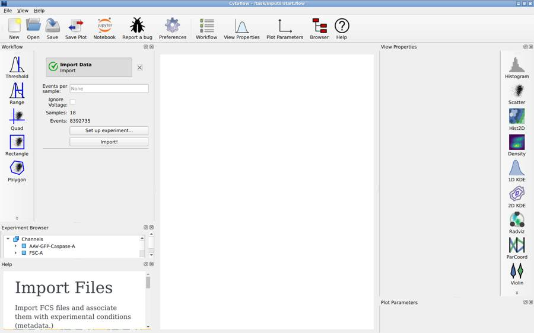
cu click 408 713; sleep 1; cu click 1393 385; sleep 2; cu screenshot /tmp/screen.png
/tmp/screen.png
{
"file_path": "/tmp/screen.png"
}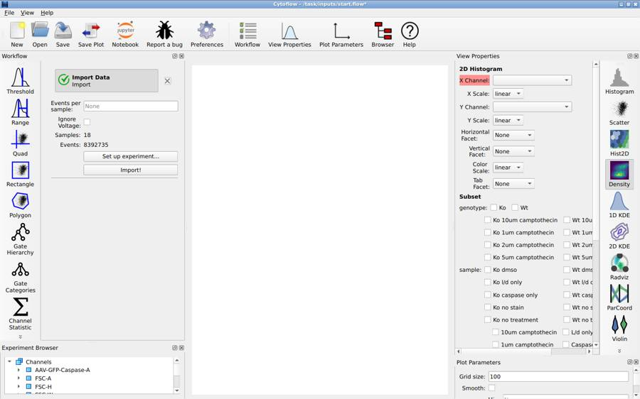
cu click 1197 181; sleep 1; cu screenshot /tmp/screen.png
/tmp/screen.png
{
"file_path": "/tmp/screen.png"
}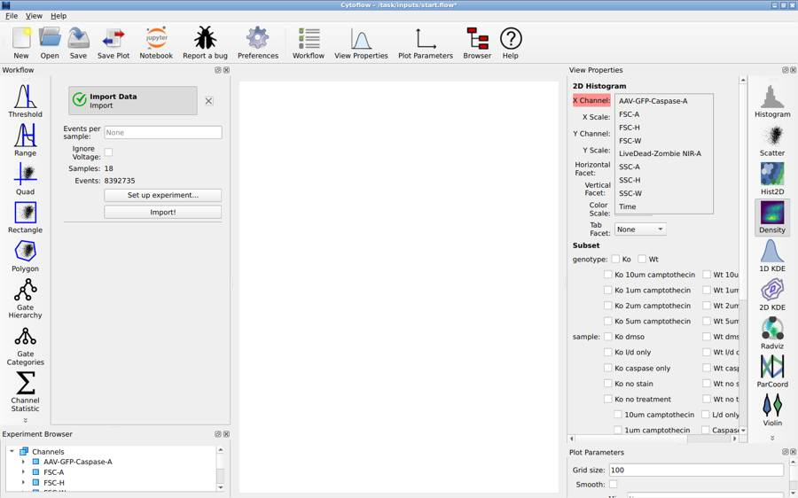
cu click 1132 373; sleep 1; cu click 1197 241; sleep 1; cu screenshot /tmp/screen.png
/tmp/screen.png
{
"file_path": "/tmp/screen.png"
}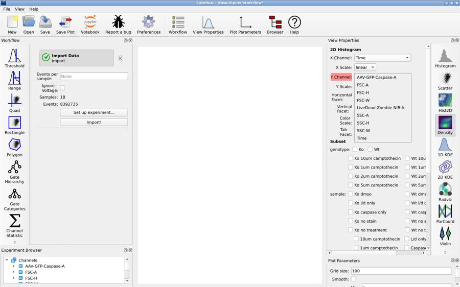
cu click 1136 266; sleep 1; cu click 1142 271; sleep 1; cu screenshot /tmp/screen.png
/tmp/screen.png
{
"file_path": "/tmp/screen.png"
}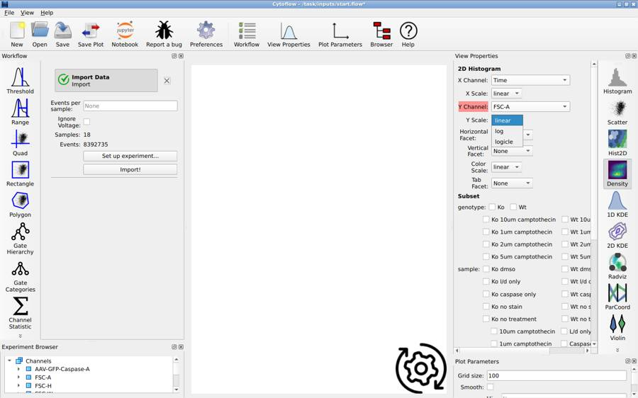
cu click 1127 296; sleep 1; cu click 1155 414; sleep 1; cu screenshot /tmp/screen.png
/tmp/screen.png
{
"file_path": "/tmp/screen.png"
}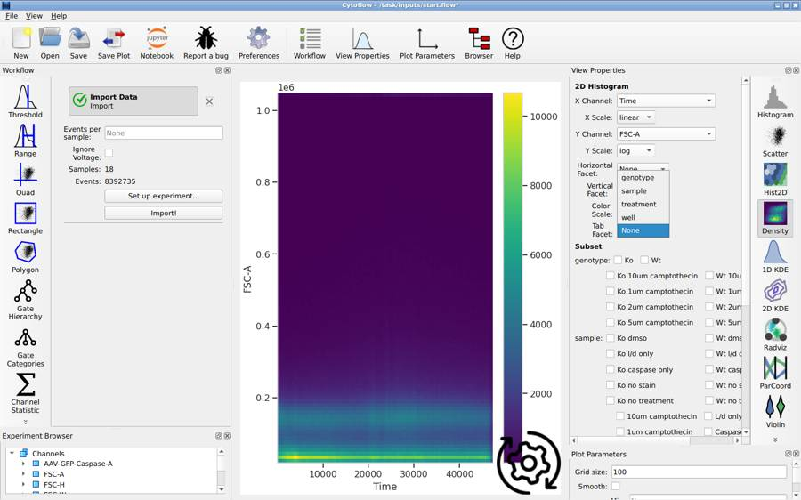
cu click 1130 391; sleep 6; cu screenshot /tmp/screen.png
/tmp/screen.png
{
"file_path": "/tmp/screen.png"
}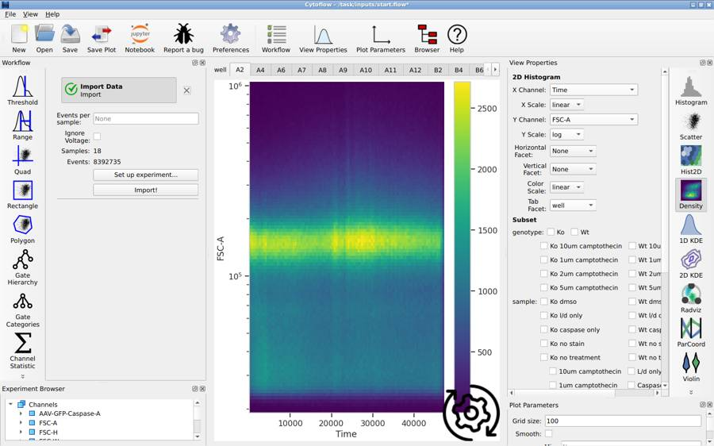
python3 -c "import PIL; print(PIL.__version__)"; mkdir -p /tmp/qc
10.2.0
mkdir -p /tmp/scripts; cat > /tmp/scripts/montage.py <<'EOF'
import sys
from PIL import Image
# usage: montage.py out.png ncols crop(x0,y0,x1,y1) files...
out=sys.argv[1]; ncol=int(sys.argv[2]); box=tuple(int(v) for v in sys.argv[3].split(','))
files=sys.argv[4:]
ims=[Image.open(f).crop(box) for f in files]
w,h=ims[0].size
nrow=(len(ims)+ncol-1)//ncol
M=Image.new('RGB',(w*ncol,h*nrow),'white')
for i,im in enumerate(ims):
M.paste(im,((i%ncol)*w,(i//ncol)*h))
scale=float(sys.argv[0+0] and 1)
M.save(out)
print(M.size)
EOF
cat > /tmp/scripts/tabs.sh <<'EOF'
#!/bin/bash
# usage: tabs.sh prefix wait x1 x2 ...
prefix=$1; shift; wait=$1; shift
i=0
for x in "$@"; do
cu click $x 140 >/dev/null; sleep $wait
cu screenshot /tmp/qc/${prefix}_$i.png >/dev/null
i=$((i+1))
done
EOF
chmod +x /tmp/scripts/tabs.sh
/tmp/scripts/tabs.sh time 5 525 567 608 650 692 738 788 838
python3 /tmp/scripts/montage.py /tmp/qc/time_m1.png 4 432,130,1008,890 /tmp/qc/time_{0..7}.png(2304, 1520)
{
"file_path": "/tmp/qc/time_m1.png"
}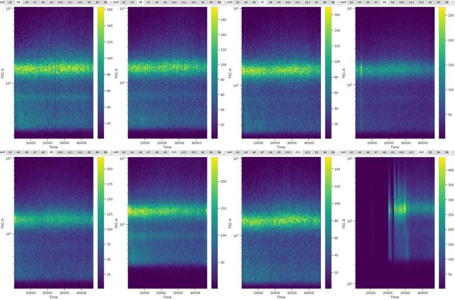
cu click 998 140; cu click 998 140; cu click 998 140; cu click 998 140; cu click 998 140; cu click 998 140; sleep 1; cu screenshot /tmp/screen.png
/tmp/screen.png
python3 -c "
from PIL import Image
Image.open('/tmp/screen.png').crop((432,128,1010,152)).resize((1156,48)).save('/tmp/qc/tabbar.png')"(Bash completed with no output)
{
"file_path": "/tmp/qc/tabbar.png"
}/tmp/scripts/tabs.sh timeB 5 646 688 730 771 812 854 900 950; cu click 998 140; cu click 998 140; sleep 1; cu screenshot /tmp/screen.png; python3 -c "
from PIL import Image
Image.open('/tmp/screen.png').crop((432,128,1010,152)).resize((1156,48)).save('/tmp/qc/tabbar.png')"; python3 /tmp/scripts/montage.py /tmp/qc/time_m2.png 4 432,130,1008,890 /tmp/qc/timeB_{0..7}.png/tmp/screen.png (2304, 1520)
{
"file_path": "/tmp/qc/time_m2.png"
}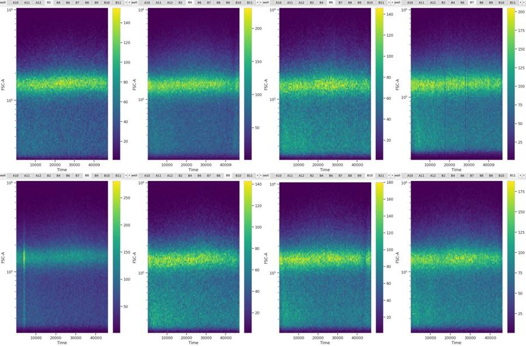
{
"file_path": "/tmp/qc/tabbar.png"
}/tmp/scripts/tabs.sh timeC 5 950 550; python3 /tmp/scripts/montage.py /tmp/qc/time_m3.png 2 432,130,1008,890 /tmp/qc/timeC_0.png /tmp/qc/timeC_1.png
(1152, 760)
{
"file_path": "/tmp/qc/time_m3.png"
}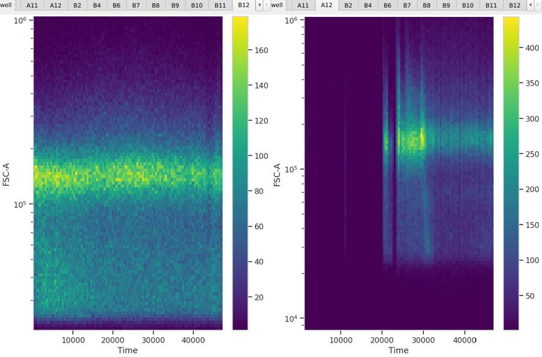
cu click 1197 181; sleep 1; cu click 1136 206; sleep 1; cu click 1142 211; sleep 1; cu screenshot /tmp/screen.png
/tmp/screen.png
{
"file_path": "/tmp/screen.png"
}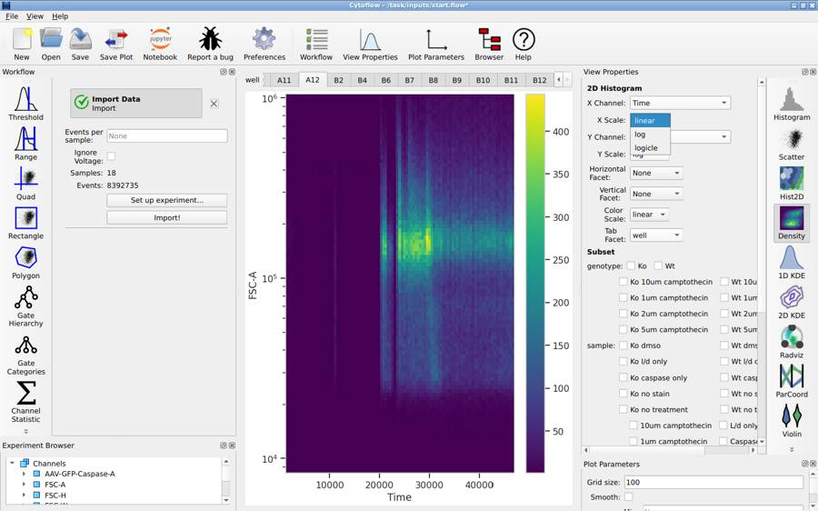
cu key Escape; sleep 0.5; cu click 1197 181; sleep 1; cu screenshot /tmp/screen.png
/tmp/screen.png
{
"file_path": "/tmp/screen.png"
}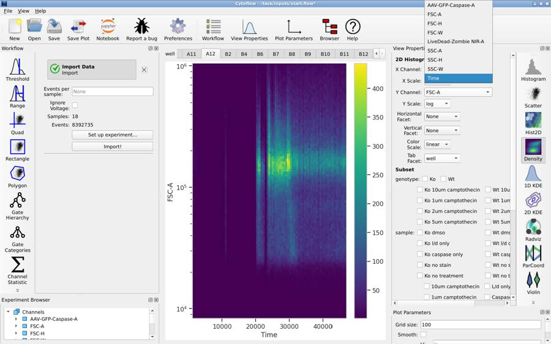
cu click 1136 37; sleep 1; cu click 1197 241; sleep 1; cu screenshot /tmp/screen.png
/tmp/screen.png
{
"file_path": "/tmp/screen.png"
}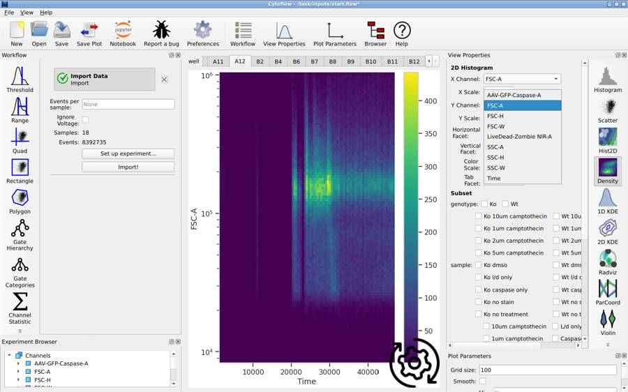
cu click 1136 337; sleep 1; cu click 1142 211; sleep 1; cu screenshot /tmp/screen.png
/tmp/screen.png
{
"file_path": "/tmp/screen.png"
}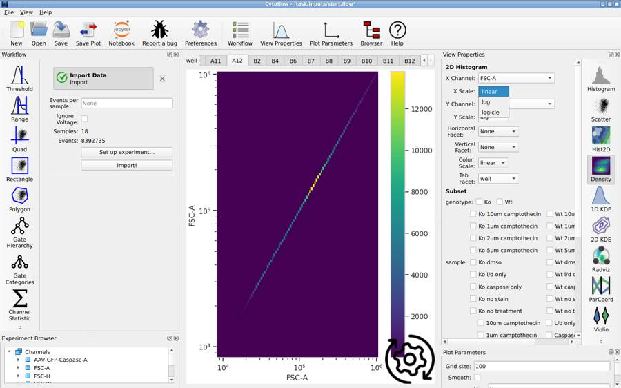
cu click 1127 236; sleep 6; cu screenshot /tmp/screen.png
/tmp/screen.png
{
"file_path": "/tmp/screen.png"
}cu click 1142 271; sleep 1; cu click 1137 320; sleep 6; cu screenshot /tmp/screen.png
/tmp/screen.png
{
"file_path": "/tmp/screen.png"
}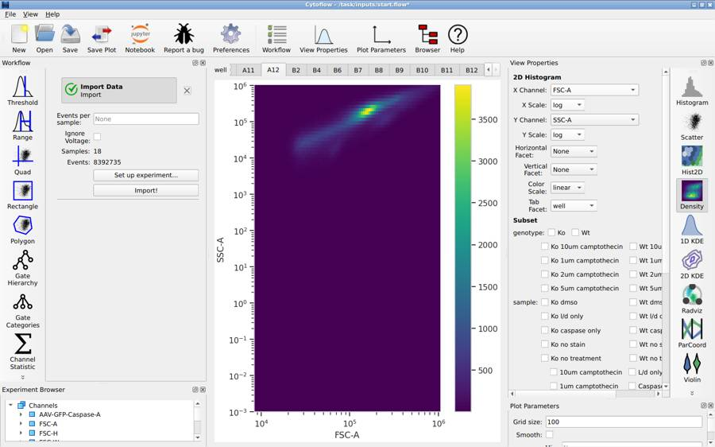
cu click 1142 271; sleep 1; cu screenshot /tmp/screen.png; python3 -c "
from PIL import Image
Image.open('/tmp/screen.png').crop((1030,140,1340,440)).save('/tmp/qc/props.png')"/tmp/screen.png
{
"file_path": "/tmp/qc/props.png"
}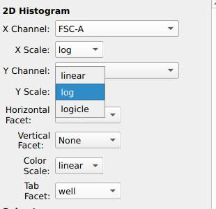
cu click 1145 296; sleep 7; cu screenshot /tmp/screen.png
/tmp/screen.png
{
"file_path": "/tmp/screen.png"
}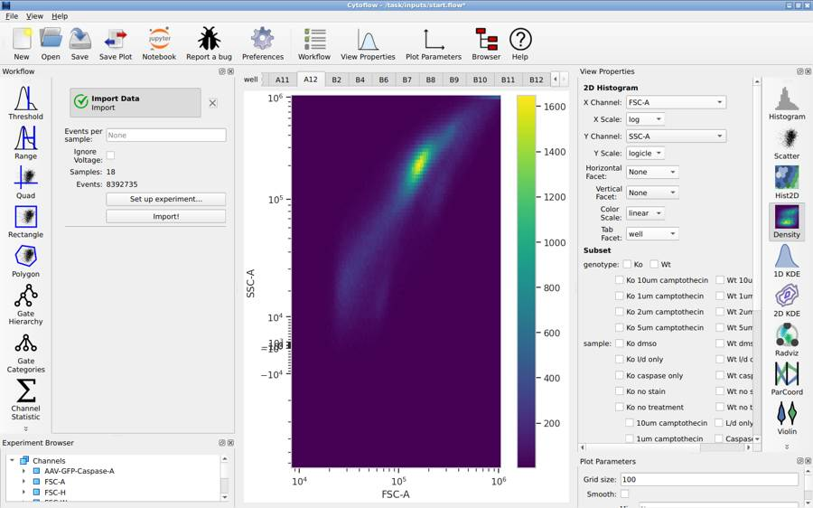
cu scroll 1230 870 down 5; sleep 1; cu screenshot /tmp/screen.png; python3 -c "
from PIL import Image
Image.open('/tmp/screen.png').crop((1024,800,1440,900)).save('/tmp/qc/pp.png')"/tmp/screen.png
{
"file_path": "/tmp/qc/pp.png"
}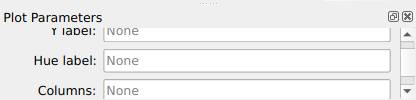
cu drag 1230 804 1230 480; sleep 1; cu screenshot /tmp/screen.png
/tmp/screen.png
{
"file_path": "/tmp/screen.png"
}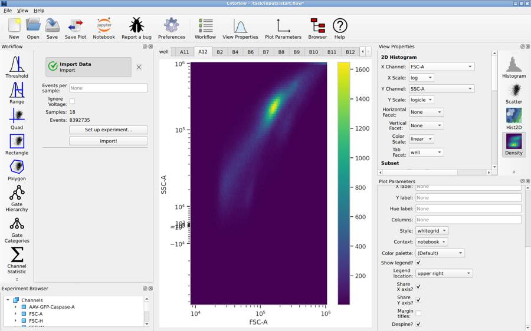
cu scroll 1230 700 up 10; sleep 1; cu screenshot /tmp/screen.png; python3 -c "
from PIL import Image
Image.open('/tmp/screen.png').crop((1024,480,1440,900)).save('/tmp/qc/pp.png')"/tmp/screen.png
{
"file_path": "/tmp/qc/pp.png"
}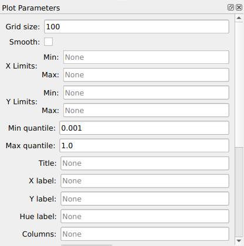
cu click 1271 637; cu type "3000"; cu key Tab; sleep 1; cu click 1142 271; sleep 1; cu screenshot /tmp/screen.png; python3 -c "
from PIL import Image
Image.open('/tmp/screen.png').crop((1030,140,1340,440)).save('/tmp/qc/props.png')"/tmp/screen.png
{
"file_path": "/tmp/qc/props.png"
}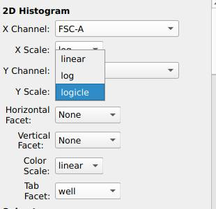
cu click 1127 247; sleep 7; cu screenshot /tmp/screen.png
/tmp/screen.png
{
"file_path": "/tmp/screen.png"
}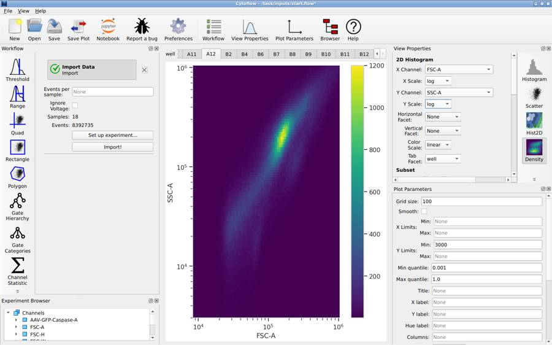
cat > /tmp/scripts/alltabs.sh <<'EOF'
#!/bin/bash
# usage: alltabs.sh prefix wait -> captures 18 tabs in layout order into /tmp/qc/prefix_WELL.png
prefix=$1; wait=$2
for i in $(seq 1 12); do cu click 984 140 >/dev/null; done
sleep 0.5
declare -a W1=(A2 A4 A6 A7 A8 A9 A10 A11 A12 B2 B4 B6)
declare -a X1=(483 525 567 608 650 692 738 788 838 883 925 966)
for k in $(seq 0 11); do
cu click ${X1[$k]} 140 >/dev/null; sleep $wait
cu screenshot /tmp/qc/${prefix}_${W1[$k]}.png >/dev/null
done
for i in $(seq 1 12); do cu click 998 140 >/dev/null; done
sleep 0.5
declare -a W2=(B7 B8 B9 B10 B11 B12)
declare -a X2=(721 763 805 850 900 950)
for k in $(seq 0 5); do
cu click ${X2[$k]} 140 >/dev/null; sleep $wait
cu screenshot /tmp/qc/${prefix}_${W2[$k]}.png >/dev/null
done
EOF
chmod +x /tmp/scripts/alltabs.sh
cu click 1142 377; sleep 1; cu screenshot /tmp/screen.png; python3 -c "
from PIL import Image
Image.open('/tmp/screen.png').crop((1030,140,1340,440)).save('/tmp/qc/props.png')"/tmp/screen.png
{
"file_path": "/tmp/qc/props.png"
}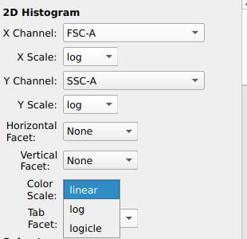
cu click 1127 402; sleep 6; /tmp/scripts/alltabs.sh scat 4; cd /tmp/qc; python3 /tmp/scripts/montage.py /tmp/qc/scat_m1.png 6 432,160,1008,890 scat_A2.png scat_A4.png scat_A6.png scat_A7.png scat_A8.png scat_A9.png scat_A10.png scat_A11.png scat_A12.png scat_B2.png scat_B4.png scat_B6.png scat_B7.png scat_B8.png scat_B9.png scat_B10.png scat_B11.png scat_B12.png
(3456, 2190) Shell cwd was reset to /task
{
"file_path": "/tmp/qc/scat_m1.png"
}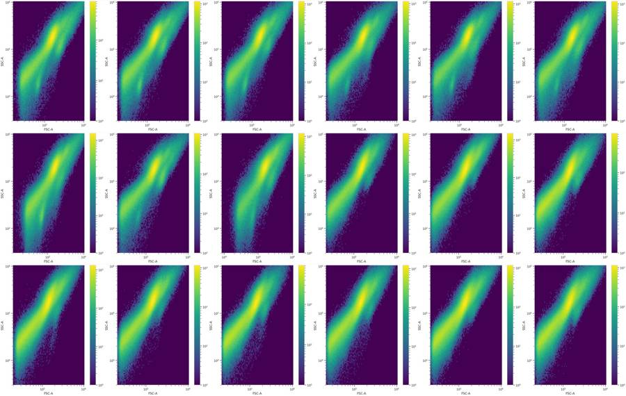
thinking
The scatter plots look consistent across wells, with the main cell cluster and a debris tail at low FSC/SSC. Next I'll check the fluorescence channels, caspase BL1-A against Zombie RL3-A, to verify the controls.
cu triple_click 2>/dev/null; cu click 1271 637 double; cu key ctrl+a; cu key BackSpace; cu key Tab; sleep 1; cu click 1197 181; sleep 1; cu screenshot /tmp/screen.png
# Computer-use helper: the agent's only way to act on the screen.
# cu screenshot [path] -> PNG of the screen (default /tmp/screen.png); prints path
# cu click X Y [left|right|double]
# cu move X Y | cu drag X1 Y1 X2 Y2 | cu scroll X Y up|down [N]
# cu type "text" (keystrokes) | cu paste "text" (clipboard) | cu key KEYS (e.g. ctrl+s, Return)
# cu cursor -> current mouse position
export DISPLAY=${DISPLAY:-:1}
cmd=$1; shift
/tmp/screen.png{
"file_path": "/tmp/screen.png"
}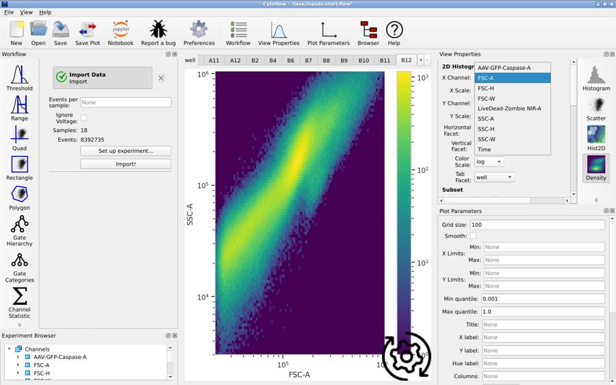
cu click 1178 158; sleep 1; cu click 1197 241; sleep 1; cu screenshot /tmp/screen.png; python3 -c "
from PIL import Image
Image.open('/tmp/screen.png').crop((1030,140,1340,440)).save('/tmp/qc/props.png')"/tmp/screen.png
{
"file_path": "/tmp/qc/props.png"
}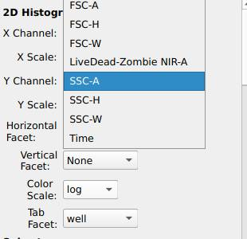
cu click 1180 217; sleep 1; cu click 1142 211; sleep 1; cu screenshot /tmp/screen.png; python3 -c "
from PIL import Image
Image.open('/tmp/screen.png').crop((1030,140,1340,440)).save('/tmp/qc/props.png')"/tmp/screen.png
{
"file_path": "/tmp/qc/props.png"
}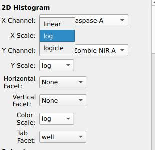
cu click 1137 236; sleep 1; cu click 1142 271; sleep 1; cu screenshot /tmp/screen.png; python3 -c "
from PIL import Image
Image.open('/tmp/screen.png').crop((1030,140,1340,440)).save('/tmp/qc/props.png')"/tmp/screen.png
{
"file_path": "/tmp/qc/props.png"
}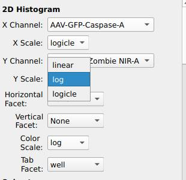
cu click 1137 296; sleep 8; cu screenshot /tmp/screen.png
/tmp/screen.png
{
"file_path": "/tmp/screen.png"
}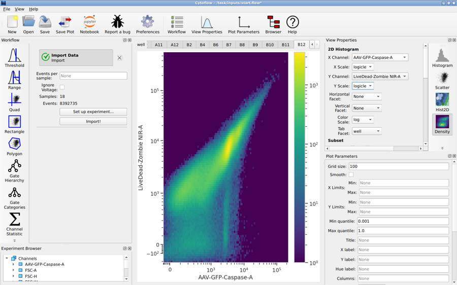
/tmp/scripts/alltabs.sh fl 4; cd /tmp/qc; python3 /tmp/scripts/montage.py /tmp/qc/fl_m1.png 6 432,160,1008,890 fl_A2.png fl_A4.png fl_A6.png fl_A7.png fl_A8.png fl_A9.png fl_A10.png fl_A11.png fl_A12.png fl_B2.png fl_B4.png fl_B6.png fl_B7.png fl_B8.png fl_B9.png fl_B10.png fl_B11.png fl_B12.png
(3456, 2190) Shell cwd was reset to /task
{
"file_path": "/tmp/qc/fl_m1.png"
}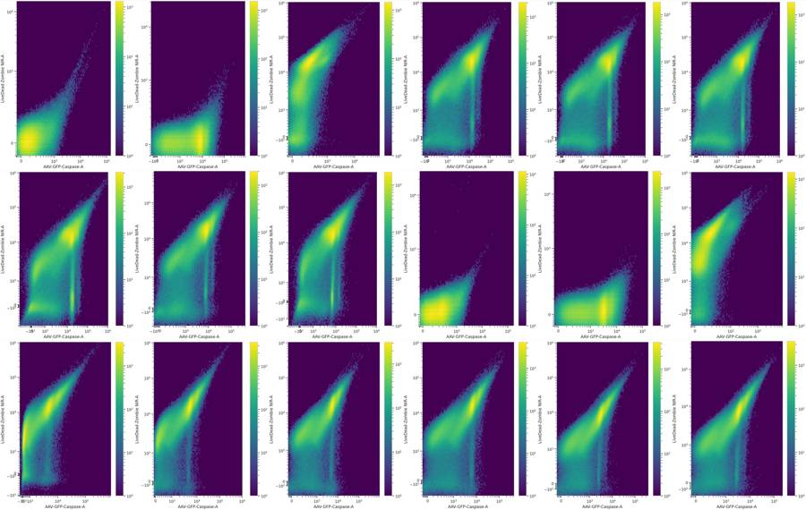
thinking
Channel labels check out (the L/D controls light RL3 and the caspase controls light BL1, so "AAV-GFP-Caspase-A" is just a stale name), and most stained events are Zombie-bright, so I'm checking live vs dead on scatter before drawing the cell gate.
cu click 1197 181; sleep 1; cu screenshot /tmp/screen.png; python3 -c "
from PIL import Image
Image.open('/tmp/screen.png').crop((1030,0,1340,440)).save('/tmp/qc/props.png')"/tmp/screen.png
{
"file_path": "/tmp/qc/props.png"
}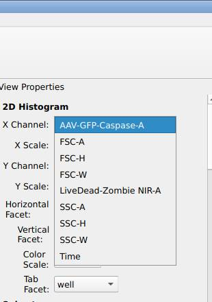
cu click 1136 206; sleep 1; cu click 1142 211; sleep 1; cu screenshot /tmp/screen.png; python3 -c "
from PIL import Image
Image.open('/tmp/screen.png').crop((1030,140,1340,440)).save('/tmp/qc/props.png')"/tmp/screen.png
{
"file_path": "/tmp/qc/props.png"
}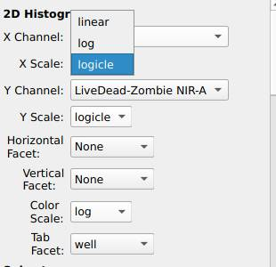
cu click 1127 187; sleep 7; /tmp/scripts/alltabs.sh fz 4; cd /tmp/qc; python3 /tmp/scripts/montage.py /tmp/qc/fz_m1.png 6 432,160,1008,890 fz_A2.png fz_A4.png fz_A6.png fz_A7.png fz_A8.png fz_A9.png fz_A10.png fz_A11.png fz_A12.png fz_B2.png fz_B4.png fz_B6.png fz_B7.png fz_B8.png fz_B9.png fz_B10.png fz_B11.png fz_B12.png
(3456, 2190) Shell cwd was reset to /task
{
"file_path": "/tmp/qc/fz_m1.png"
}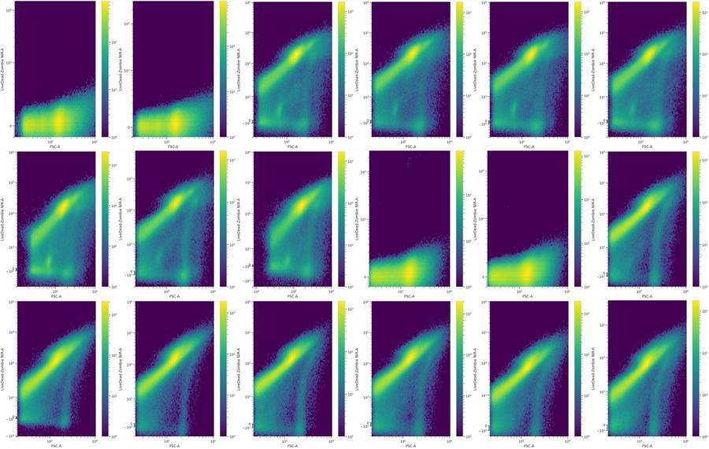
cu click 1197 181; sleep 1; cu screenshot /tmp/screen.png; python3 -c "
from PIL import Image
Image.open('/tmp/screen.png').crop((1030,0,1340,440)).save('/tmp/qc/props.png')"/tmp/screen.png
{
"file_path": "/tmp/qc/props.png"
}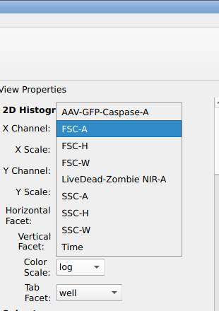
cu click 1140 277; sleep 8; cu screenshot /tmp/screen.png
/tmp/screen.png
{
"file_path": "/tmp/screen.png"
}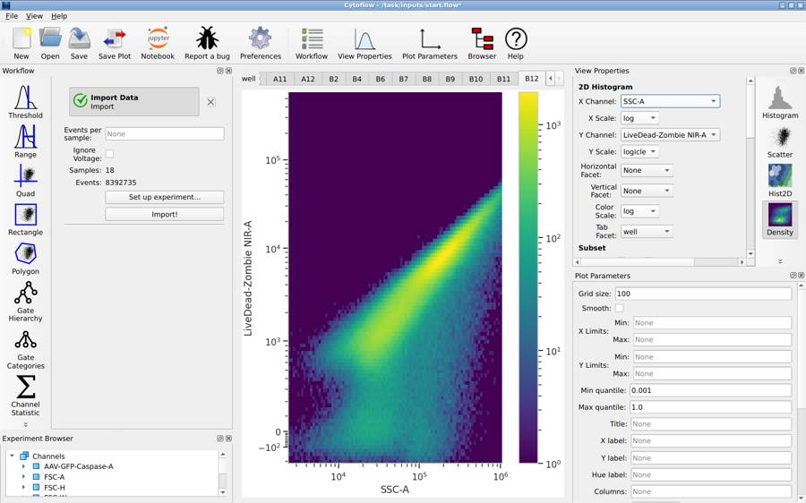
cu click 500 140; sleep 5; cu screenshot /tmp/qc/sz_A11.png; for i in $(seq 1 12); do cu click 984 140 >/dev/null; done; cu click 483 140; sleep 5; cu screenshot /tmp/qc/sz_A2.png; cu click 567 140; sleep 5; cu screenshot /tmp/qc/sz_A6.png; cu click 608 140; sleep 5; cu screenshot /tmp/qc/sz_A7.png; python3 /tmp/scripts/montage.py /tmp/qc/sz_m.png 4 432,160,1008,890 /tmp/qc/sz_A2.png /tmp/qc/sz_A6.png /tmp/qc/sz_A7.png /tmp/qc/sz_A11.png
/tmp/qc/sz_A11.png /tmp/qc/sz_A2.png /tmp/qc/sz_A6.png /tmp/qc/sz_A7.png (2304, 730)
{
"file_path": "/tmp/qc/sz_m.png"
}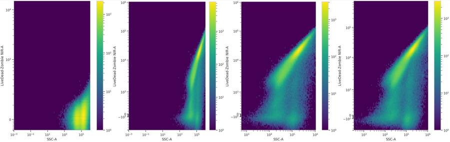
cu click 250 183; sleep 1; cu click 46 460; sleep 3; cu screenshot /tmp/screen.png
/tmp/screen.png
{
"file_path": "/tmp/screen.png"
}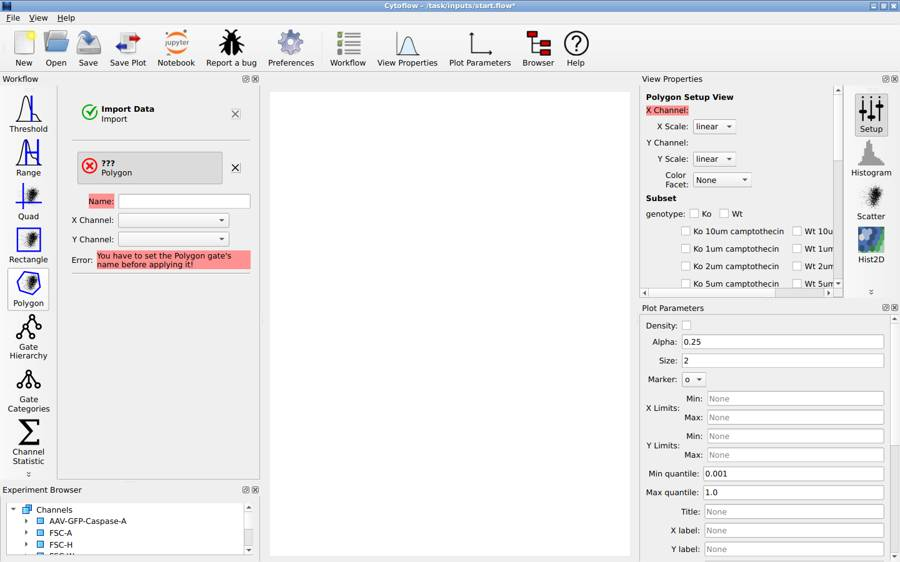
cu click 294 322; cu type "cells"; cu key Tab; sleep 1; cu click 278 353; sleep 1; cu screenshot /tmp/screen.png
/tmp/screen.png
{
"file_path": "/tmp/screen.png"
}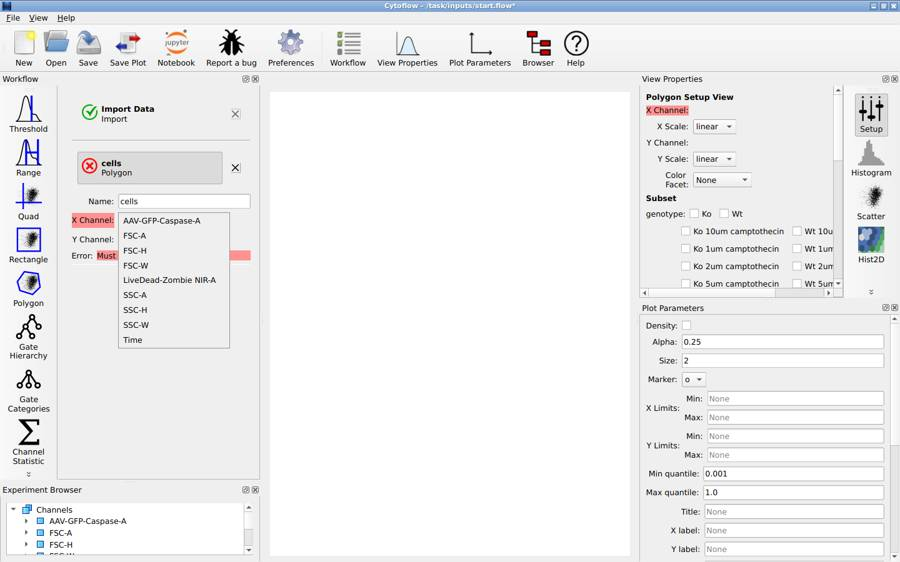
cu click 215 377; sleep 1; cu click 278 384; sleep 1; cu screenshot /tmp/screen.png
/tmp/screen.png
{
"file_path": "/tmp/screen.png"
}cu click 215 503; sleep 1; cu click 1098 521; sleep 1; cu click 1142 202; sleep 1; cu screenshot /tmp/screen.png; python3 -c "
from PIL import Image
Image.open('/tmp/screen.png').crop((1030,140,1340,440)).save('/tmp/qc/props.png')"/tmp/screen.png
{
"file_path": "/tmp/qc/props.png"
}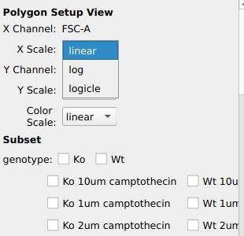
cu click 1127 227; sleep 1; cu click 1142 254; sleep 1; cu screenshot /tmp/screen.png; python3 -c "
from PIL import Image
Image.open('/tmp/screen.png').crop((1030,140,1340,440)).save('/tmp/qc/props.png')"/tmp/screen.png
{
"file_path": "/tmp/qc/props.png"
}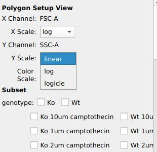
cu click 1127 280; sleep 1; cu click 1142 288; sleep 1; cu screenshot /tmp/screen.png; python3 -c "
from PIL import Image
Image.open('/tmp/screen.png').crop((1030,140,1340,440)).save('/tmp/qc/props.png')"/tmp/screen.png
{
"file_path": "/tmp/qc/props.png"
}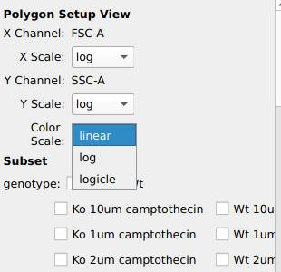
cu click 1127 313; sleep 15; cu screenshot /tmp/screen.png
/tmp/screen.png
{
"file_path": "/tmp/screen.png"
}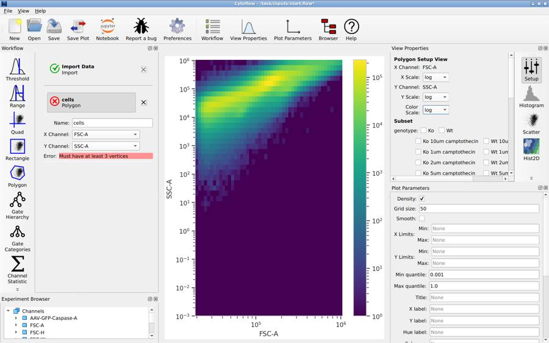
cu click 1255 547 double; cu key ctrl+a; cu type "100"; cu key Tab; cu click 1270 599; cu type "20000"; cu key Tab; cu click 1270 629; cu type "1100000"; cu key Tab; cu click 1270 659; cu type "5000"; cu key Tab; cu click 1270 690; cu type "1100000"; cu key Tab; sleep 15; cu screenshot /tmp/screen.png
/tmp/screen.png
{
"file_path": "/tmp/screen.png"
}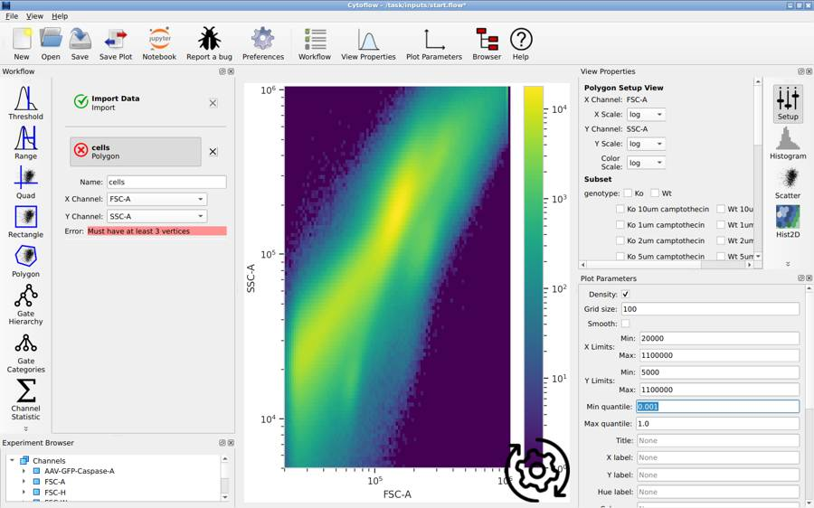
cu click 612 626; sleep 0.5; cu click 754 626; sleep 0.5; cu click 870 478; sleep 0.5; cu click 892 362; sleep 0.5; cu click 892 160; sleep 0.5; cu click 732 160; sleep 0.5; cu click 612 362 double; sleep 5; cu screenshot /tmp/screen.png
/tmp/screen.png
{
"file_path": "/tmp/screen.png"
}
sleep 3; cu screenshot /tmp/screen.png
/tmp/screen.png
{
"file_path": "/tmp/screen.png"
}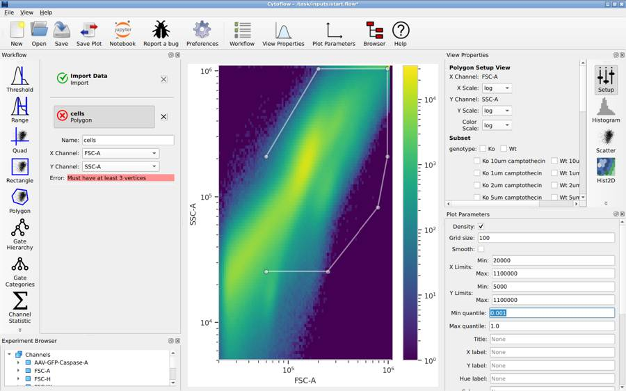
cu click 612 626; sleep 8; cu screenshot /tmp/screen.png
/tmp/screen.png
{
"file_path": "/tmp/screen.png"
}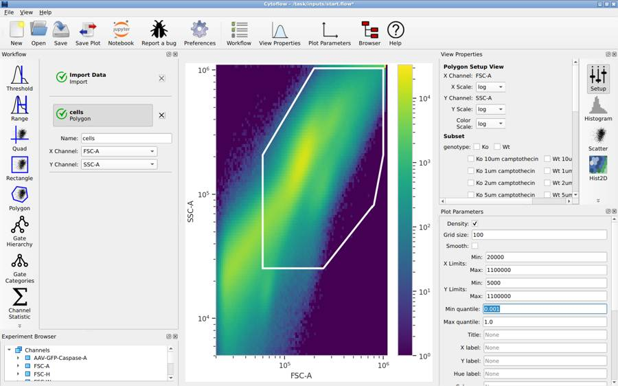
cu click 141 75; sleep 2; cu screenshot /tmp/screen.png
/tmp/screen.png
{
"file_path": "/tmp/screen.png"
}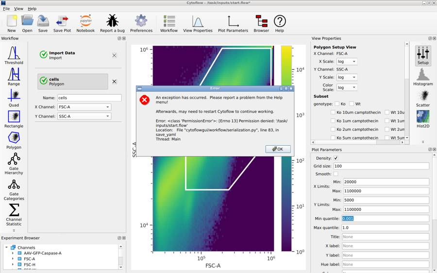
cu click 915 491; sleep 1; cu click 21 28; sleep 1; cu screenshot /tmp/screen.png
/tmp/screen.png
{
"file_path": "/tmp/screen.png"
}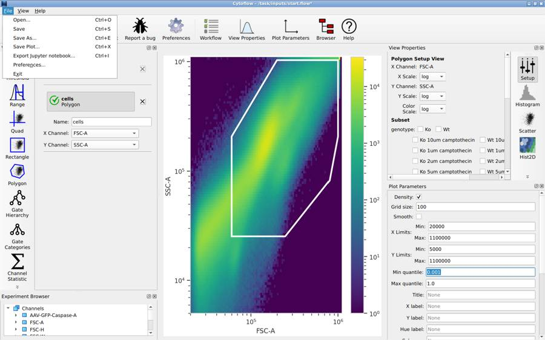
cu click 65 100; sleep 2; cu screenshot /tmp/screen.png
/tmp/screen.png
{
"file_path": "/tmp/screen.png"
}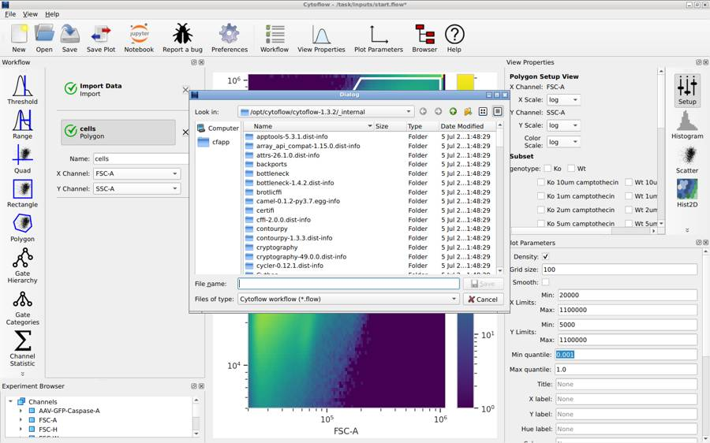
cu click 706 576; cu paste "/task/outputs/workflow.flow"; sleep 0.5; cu key Return; sleep 3; cu screenshot /tmp/screen.png; ls -la /task/outputs/
/tmp/screen.png total 32 drwxrwsrwx 2 agent task 4096 Nov 6 00:52 . drwxr-xr-x 4 root root 4096 Nov 5 22:25 .. -rw-rw-r-- 1 cfapp task 23306 Nov 6 00:52 workflow.flow
grep -n -A40 "polygon" /task/outputs/workflow.flow | head -60
784: current_view: &id003 !polygon-view;3 785- current_plot: null 786- huefacet: '' 787- huescale: log 788: op: &id002 !polygon;1 789- name: cells 790- vertices: 791- - !!python/tuple 792- - 60074.68516304132 793- - 25286.01903125984 794- - !!python/tuple 795- - 248940.92946961863 796- - 25286.01903125984 797- - !!python/tuple 798- - 802689.0180019437 799- - 81904.13885997841 800- - !!python/tuple 801- - 999728.0704267931 802- - 206964.03695558044 803- - !!python/tuple 804- - 999728.0704267931 805- - 1030947.6530166679 806- - !!python/tuple 807- - 199876.5025484914 808- - 1030947.6530166679 809- - !!python/tuple 810- - 60074.68516304132 811- - 206964.03695558044 812- - !!python/tuple 813- - 60074.68516304132 814- - 206964.03695558044 815- xchannel: FSC-A 816- xscale: log 817- ychannel: SSC-A 818- yscale: log 819: plot_params: !polygon-params;1 820- alpha: 0.25 821- col_wrap: null 822- density: true 823- despine: true 824- gridsize: 100 825- huelabel: '' 826- legend: true 827- marker: o 828- max_quantile: 1.0 829- min_quantile: 0.001 830- s: 2 831- sharex: true 832- sharey: true 833- smoothed: false 834- smoothed_sigma: 1.0 835- sns_context: notebook 836- sns_style: whitegrid 837- title: '' 838- xlabel: '' 839- xlim: !!python/tuple 840- - 20000.0 841- - 1100000.0 842- ylabel: '' 843- ylim: !!python/tuple
cu click 250 268; sleep 1; cu click 46 460; sleep 3; cu click 294 409; cu type "singlets"; cu key Tab; sleep 1; cu screenshot /tmp/screen.png
/tmp/screen.png
{
"file_path": "/tmp/screen.png"
}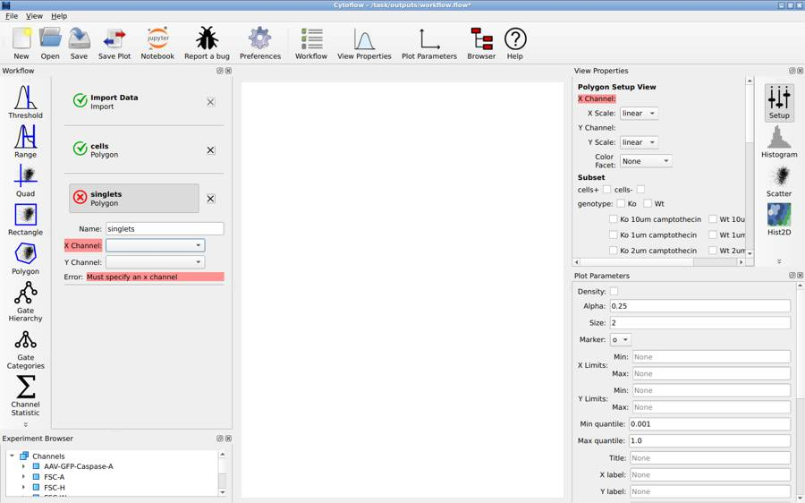
cu click 1098 521; sleep 0.5; cu click 1086 339; sleep 0.5; cu click 278 439; sleep 1; cu screenshot /tmp/screen.png
/tmp/screen.png
{
"file_path": "/tmp/screen.png"
}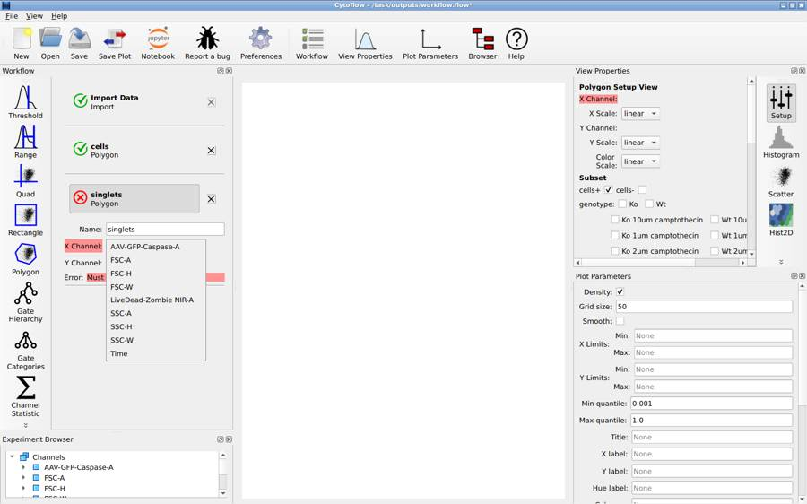
cu click 215 464; sleep 1; cu click 278 469; sleep 1; cu screenshot /tmp/screen.png; python3 -c "
from PIL import Image
Image.open('/tmp/screen.png').crop((100,380,420,700)).save('/tmp/qc/props.png')"/tmp/screen.png
{
"file_path": "/tmp/qc/props.png"
}cu click 220 518; sleep 15; cu screenshot /tmp/screen.png
/tmp/screen.png
{
"file_path": "/tmp/screen.png"
}cu click 1142 202; sleep 1; cu click 1127 227; sleep 1; cu click 1142 254; sleep 1; cu click 1127 280; sleep 1; cu click 1142 288; sleep 1; cu click 1127 313; sleep 1; cu click 1255 547 double; cu key ctrl+a; cu type "100"; cu key Tab; cu click 1270 599; cu type "50000"; cu key Tab; cu click 1270 629; cu type "1100000"; cu key Tab; cu click 1270 659; cu type "20000"; cu key Tab; cu click 1270 690; cu type "1100000"; cu key Tab; sleep 15; cu screenshot /tmp/screen.png
/tmp/screen.png
{
"file_path": "/tmp/screen.png"
}python3 -c "
from PIL import Image
im=Image.open('/tmp/screen.png')
im.crop((440,140,520,850)).resize((160,1420)).save('/tmp/qc/yaxis.png')
"(Bash completed with no output)
{
"file_path": "/tmp/qc/yaxis.png"
}python3 -c "
from PIL import Image
im=Image.open('/tmp/screen.png')
im.crop((500,145,910,835)).save('/tmp/qc/sing.png')
"(Bash completed with no output)
{
"file_path": "/tmp/qc/sing.png"
}python3 -c "
from PIL import Image
import numpy as np, math
im=np.array(Image.open('/tmp/screen.png').convert('RGB')).astype(int)
for x in range(520,900,20):
col=im[150:828,x,:]
b=col[:,0]+col[:,1] # yellow high
y=np.argmax(b)+150
# also extent where b> some fraction
A=10**(5+(x-592)/301); H=10**(5-(y-538.5)/487)
thr=b.max()*0.5
idx=np.where(b>thr)[0]+150
print(x,y,round(A),round(H),round(H/A,2), 'band', idx.min(), idx.max(), round(10**(5-(idx.min()-538.5)/487)), round(10**(5-(idx.max()-538.5)/487)))
"520 150 57650 627684 10.89 band 150 150 627684 627684 540 150 67180 627684 9.34 band 150 657 627684 57105 560 150 78287 627684 8.02 band 150 630 627684 64881 580 150 91229 627684 6.88 band 150 602 627684 74064 600 150 106311 627684 5.9 band 150 582 627684 81410 620 150 123886 627684 5.07 band 150 561 627684 89908 640 150 144367 627684 4.35 band 150 541 627684 98825 660 150 168234 627684 3.73 band 150 534 627684 102150 680 150 196046 627684 3.2 band 150 520 627684 109141 700 150 228457 627684 2.75 band 150 513 627684 112814 720 150 266225 627684 2.36 band 150 506 627684 116610 740 150 310238 627684 2.02 band 150 493 627684 124002 760 150 361526 627684 1.74 band 150 472 627684 136946 780 150 421293 627684 1.49 band 150 452 627684 150528 800 150 490942 627684 1.28 band 150 150 627684 627684 820 150 572104 627684 1.1 band 150 150 627684 627684 840 150 666684 627684 0.94 band 150 150 627684 627684 860 150 776901 627684 0.81 band 150 150 627684 627684 880 150 905338 627684 0.69 band 150 150 627684 627684
python3 -c "
from PIL import Image
import numpy as np, math
im=np.array(Image.open('/tmp/screen.png').convert('RGB')).astype(int)
for x in range(520,900,20):
col=im[156:826,x,:]
g=col[:,1].copy()
g[(col[:,0]>200)&(col[:,2]>200)]=0
y=np.argmax(g)+156
A=10**(5+(x-592)/301); H=10**(5-(y-538.5)/487)
thr=g.max()*0.6
idx=np.where(g>thr)[0]+156
print(x,y,g.max(),round(A),round(H),round(H/A,2), 'band60', round(10**(5-(idx.min()-538.5)/487)), round(10**(5-(idx.max()-538.5)/487)))
"520 156 1 57650 610128 10.58 band60 610128 25805 540 624 222 67180 66748 0.99 band60 76196 33947 560 596 223 78287 76196 0.97 band60 89484 38752 580 569 223 91229 86571 0.95 band60 101669 44029 600 542 226 106311 98359 0.93 band60 116060 51707 620 514 229 123886 112281 0.91 band60 127570 59027 640 494 231 144367 123417 0.85 band60 140887 67064 660 473 230 168234 136300 0.81 band60 149818 74064 680 459 224 196046 145628 0.74 band60 171025 81410 700 446 216 228457 154860 0.68 band60 187987 89908 720 432 208 266225 165457 0.62 band60 207610 92934 740 466 203 310238 140887 0.45 band60 228200 102150 760 453 200 361526 149818 0.41 band60 228200 109141 780 418 192 421293 176780 0.42 band60 252021 116610 800 411 183 490942 182729 0.37 band60 269268 119965 820 411 175 572104 182729 0.32 band60 295973 124002 840 405 163 666684 187987 0.28 band60 326869 132488 860 398 152 776901 194313 0.25 band60 349238 146318 880 398 136 905338 194313 0.21 band60 359287 150528
cu click 507 773; sleep 0.5; cu click 645 573; sleep 0.5; cu click 736 467; sleep 0.5; cu click 789 392; sleep 0.5; cu click 789 178; sleep 0.5; cu click 507 599; sleep 0.5; cu click 507 773; sleep 12; cu screenshot /tmp/screen.png
/tmp/screen.png
{
"file_path": "/tmp/screen.png"
}cu key ctrl+s; sleep 3; grep -n -B2 -A30 "name: singlets" /task/outputs/workflow.flow | grep -A30 vertices | head -32
1346- vertices: 1347- - !!python/tuple 1348- - 51729.23678046132 1349- - 28019.17359907604 1350- - !!python/tuple 1351- - 149991.2771329823 1352- - 91247.67990949968 1353- - !!python/tuple 1354- - 300948.6154694194 1355- - 170855.52944299564 1356- - !!python/tuple 1357- - 452664.8369498912 1358- - 266021.3415826038 1359- - !!python/tuple 1360- - 452664.8369498912 1361- - 938429.2887011357 1362- - !!python/tuple 1363- - 51729.23678046132 1364- - 78244.7772051281 1365- xchannel: FSC-A 1366- xscale: log 1367- ychannel: FSC-H 1368- yscale: log 1369- plot_params: !polygon-params;1 1370- alpha: 0.25 1371- col_wrap: null 1372- density: true 1373- despine: true 1374- gridsize: 100 1375- huelabel: ''
thinking
The stored vertices are slightly off because the plot re-rendered with new axis limits just before my clicks. I'm redrawing them with the corrected axis mapping and a more generous lower boundary at high FSC-A.
cu click 507 761; sleep 0.5; cu click 645 575; sleep 0.5; cu click 736 488; sleep 0.5; cu click 789 431; sleep 0.5; cu click 789 227; sleep 0.5; cu click 507 599; sleep 0.5; cu click 507 761; sleep 12; cu screenshot /tmp/screen.png; cu key ctrl+s; sleep 3; grep -n -B2 -A22 "name: singlets" /task/outputs/workflow.flow | grep -A20 vertices | head -20
/tmp/screen.png 1346- vertices: 1347- - !!python/tuple 1348- - 51729.2369744422 1349- - 29980.06498563118 1350- - !!python/tuple 1351- - 149991.29530612356 1352- - 90132.31233097626 1353- - !!python/tuple 1354- - 300948.675046492 1355- - 150156.8681872952 1356- - !!python/tuple 1357- - 452664.9469414209 1358- - 210586.94347259522 1359- - !!python/tuple 1360- - 452664.9469414209 1361- - 702879.0282671116 1362- - !!python/tuple 1363- - 51729.2369744422 1364- - 78244.7772051281 1365- xchannel: FSC-A
{
"file_path": "/tmp/screen.png"
}cu click 250 355; sleep 1; cu click 46 250; sleep 3; cu screenshot /tmp/screen.png
/tmp/screen.png
{
"file_path": "/tmp/screen.png"
}cu click 288 495; cu type "live"; cu key Tab; sleep 1; cu click 265 525; sleep 1; cu screenshot /tmp/screen.png; python3 -c "
from PIL import Image
Image.open('/tmp/screen.png').crop((100,480,420,800)).save('/tmp/qc/props.png')"/tmp/screen.png
{
"file_path": "/tmp/qc/props.png"
}cu click 250 621; sleep 2; cu screenshot /tmp/screen.png
/tmp/screen.png
{
"file_path": "/tmp/screen.png"
}cu click 1130 202; sleep 1; cu screenshot /tmp/screen.png; python3 -c "
from PIL import Image
Image.open('/tmp/screen.png').crop((1030,140,1340,440)).save('/tmp/qc/props.png')"/tmp/screen.png
{
"file_path": "/tmp/qc/props.png"
}cu click 1125 252; sleep 1; cu click 1086 287; sleep 1; cu scroll 1180 400 down 10; sleep 1; cu screenshot /tmp/screen.png
/tmp/screen.png
{
"file_path": "/tmp/screen.png"
}sleep 5; cu scroll 1180 300 up 3; sleep 1; cu screenshot /tmp/screen.png; python3 -c "
from PIL import Image
Image.open('/tmp/screen.png').crop((1024,140,1440,470)).save('/tmp/qc/props.png')"/tmp/screen.png
{
"file_path": "/tmp/qc/props.png"
}cu click 1108 210; sleep 10; cu screenshot /tmp/screen.png
/tmp/screen.png
{
"file_path": "/tmp/screen.png"
}cu click 1273 235; sleep 0.5; cu click 1273 291; sleep 0.5; cu scroll 1180 300 up 15; sleep 1; cu screenshot /tmp/screen.png; python3 -c "
from PIL import Image
Image.open('/tmp/screen.png').crop((1024,140,1440,470)).save('/tmp/qc/props.png')"/tmp/screen.png
{
"file_path": "/tmp/qc/props.png"
}cu click 1142 236; sleep 1; cu screenshot /tmp/screen.png; python3 -c "
from PIL import Image
Image.open('/tmp/screen.png').crop((1024,140,1440,470)).save('/tmp/qc/props.png')"/tmp/screen.png
{
"file_path": "/tmp/qc/props.png"
}cu click 1116 212; sleep 10; cu screenshot /tmp/screen.png
/tmp/screen.png
{
"file_path": "/tmp/screen.png"
}cu scroll 1180 300 down 3; sleep 1; cu screenshot /tmp/screen.png; python3 -c "
from PIL import Image
Image.open('/tmp/screen.png').crop((1024,140,1440,470)).save('/tmp/qc/props.png')"/tmp/screen.png
{
"file_path": "/tmp/qc/props.png"
}cu click 1275 427; sleep 0.5; cu scroll 1180 300 down 2; sleep 1; cu screenshot /tmp/screen.png; python3 -c "
from PIL import Image
Image.open('/tmp/screen.png').crop((1024,140,1440,470)).save('/tmp/qc/props.png')"/tmp/screen.png
{
"file_path": "/tmp/qc/props.png"
}cu click 1275 302; sleep 0.5; cu click 1114 413; sleep 12; cu screenshot /tmp/screen.png
/tmp/screen.png
{
"file_path": "/tmp/screen.png"
}cu click 1273 359; sleep 12; cu screenshot /tmp/screen.png
/tmp/screen.png
{
"file_path": "/tmp/screen.png"
}cu click 288 555; cu type "-1000000"; cu key Tab; sleep 1; cu click 288 585; cu type "500"; cu key Tab; sleep 12; cu screenshot /tmp/screen.png
/tmp/screen.png
{
"file_path": "/tmp/screen.png"
}cu key ctrl+s; sleep 2; cu click 250 441; sleep 1; cu click 46 180; sleep 3; cu screenshot /tmp/screen.png
/tmp/screen.png
{
"file_path": "/tmp/screen.png"
}cu click 293 581; cu type "casp_pos"; cu key Tab; sleep 1; cu click 275 612; sleep 1; cu screenshot /tmp/screen.png; python3 -c "
from PIL import Image
Image.open('/tmp/screen.png').crop((100,560,420,880)).save('/tmp/qc/props.png')"/tmp/screen.png
{
"file_path": "/tmp/qc/props.png"
}cu click 260 613; sleep 2; cu click 1140 224; sleep 1; cu screenshot /tmp/screen.png; python3 -c "
from PIL import Image
Image.open('/tmp/screen.png').crop((1024,140,1440,470)).save('/tmp/qc/props.png')"/tmp/screen.png
{
"file_path": "/tmp/qc/props.png"
}cu click 1134 272; sleep 1; cu click 1085 309; sleep 0.5; cu click 1079 358; sleep 0.5; cu scroll 1180 400 down 5; sleep 1; cu screenshot /tmp/screen.png; python3 -c "
from PIL import Image
Image.open('/tmp/screen.png').crop((1024,140,1440,470)).save('/tmp/qc/props.png')"/tmp/screen.png
{
"file_path": "/tmp/qc/props.png"
}cu click 1108 321; sleep 0.5; cu click 1273 402; sleep 0.5; cu click 1273 374; sleep 0.5; cu click 1114 346; sleep 0.5; cu scroll 1180 400 down 1; sleep 1; cu screenshot /tmp/screen.png; python3 -c "
from PIL import Image
Image.open('/tmp/screen.png').crop((1024,140,1440,470)).save('/tmp/qc/props.png')"/tmp/screen.png
{
"file_path": "/tmp/qc/props.png"
}cu click 1114 395; sleep 0.5; cu click 1108 259; sleep 1; cu screenshot /tmp/screen.png; python3 -c "
from PIL import Image
Image.open('/tmp/screen.png').crop((1024,140,1440,470)).save('/tmp/qc/props.png')"/tmp/screen.png
{
"file_path": "/tmp/qc/props.png"
}cu click 1108 259; sleep 1; cu screenshot /tmp/screen.png; python3 -c "
from PIL import Image
Image.open('/tmp/screen.png').crop((1024,140,1440,470)).save('/tmp/qc/props.png')"/tmp/screen.png
{
"file_path": "/tmp/qc/props.png"
}cu scroll 1180 300 up 15; sleep 1; cu click 1152 258; sleep 1; cu screenshot /tmp/screen.png; python3 -c "
from PIL import Image
Image.open('/tmp/screen.png').crop((1024,140,1440,470)).save('/tmp/qc/props.png')"/tmp/screen.png
{
"file_path": "/tmp/qc/props.png"
}cu click 1128 234; sleep 12; cu screenshot /tmp/screen.png
/tmp/screen.png
{
"file_path": "/tmp/screen.png"
}cu click 1112 642; sleep 12; cu screenshot /tmp/screen.png
/tmp/screen.png
{
"file_path": "/tmp/screen.png"
}cu scroll 1180 400 down 6; sleep 1; cu screenshot /tmp/screen.png; python3 -c "
from PIL import Image
Image.open('/tmp/screen.png').crop((1024,140,1440,470)).save('/tmp/qc/props.png')"/tmp/screen.png
{
"file_path": "/tmp/qc/props.png"
}cu click 1273 311; sleep 0.5; cu click 1273 339; sleep 12; cu screenshot /tmp/screen.png
/tmp/screen.png
{
"file_path": "/tmp/screen.png"
}thinking
Live-cell BL1 shows a dim caspase-negative population and a bright caspase+ peak that grows with camptothecin, sitting at about 1.4e4 in WT but 4.5e3 in KO, so the threshold must fit both genotypes. I'm checking the per-well histograms before adjusting it.
cu click 1393 250; sleep 3; cu screenshot /tmp/screen.png
/tmp/screen.png
{
"file_path": "/tmp/screen.png"
}cu scroll 1180 300 up 20; sleep 0.5; cu click 1030 468; cu click 1030 468; cu click 1030 468; cu click 1030 468; sleep 1; cu screenshot /tmp/screen.png; python3 -c "
from PIL import Image
Image.open('/tmp/screen.png').crop((1024,140,1440,470)).save('/tmp/qc/props.png')"/tmp/screen.png
{
"file_path": "/tmp/qc/props.png"
}cu click 1181 181; sleep 1; cu screenshot /tmp/screen.png; python3 -c "
from PIL import Image
Image.open('/tmp/screen.png').crop((1024,140,1440,470)).save('/tmp/qc/props.png')"/tmp/screen.png
{
"file_path": "/tmp/qc/props.png"
}cu click 1160 182; sleep 1; cu click 1127 211; sleep 1; cu screenshot /tmp/screen.png; python3 -c "
from PIL import Image
Image.open('/tmp/screen.png').crop((1024,140,1440,470)).save('/tmp/qc/props.png')"/tmp/screen.png
{
"file_path": "/tmp/qc/props.png"
}cu click 1121 260; sleep 1; cu click 1141 390; sleep 1; cu screenshot /tmp/screen.png; python3 -c "
from PIL import Image
Image.open('/tmp/screen.png').crop((1024,140,1440,470)).save('/tmp/qc/props.png')"/tmp/screen.png
{
"file_path": "/tmp/qc/props.png"
}cu click 1114 366; sleep 1; cu click 1074 439; sleep 0.5; cu screenshot /tmp/screen.png; python3 -c "
from PIL import Image
Image.open('/tmp/screen.png').crop((1024,140,1440,470)).save('/tmp/qc/props.png')"/tmp/screen.png
{
"file_path": "/tmp/qc/props.png"
}cu scroll 1180 300 down 2; sleep 1; cu screenshot /tmp/screen.png; python3 -c "
from PIL import Image
Image.open('/tmp/screen.png').crop((1024,140,1440,470)).save('/tmp/qc/props.png')"/tmp/screen.png
{
"file_path": "/tmp/qc/props.png"
}cu click 1068 365; sleep 0.5; cu scroll 1180 300 down 5; sleep 1; cu screenshot /tmp/screen.png; python3 -c "
from PIL import Image
Image.open('/tmp/screen.png').crop((1024,140,1440,470)).save('/tmp/qc/props.png')"/tmp/screen.png
{
"file_path": "/tmp/qc/props.png"
}cu click 1095 327; sleep 0.5; cu click 1112 642; sleep 0.5; cu scroll 1180 300 up 2; sleep 1; cu screenshot /tmp/screen.png; python3 -c "
from PIL import Image
Image.open('/tmp/screen.png').crop((1024,140,1440,470)).save('/tmp/qc/props.png')"/tmp/screen.png
{
"file_path": "/tmp/qc/props.png"
}sleep 10; /tmp/scripts/alltabs.sh hc 4; cd /tmp/qc; python3 /tmp/scripts/montage.py /tmp/qc/hc_m1.png 6 432,160,1008,890 hc_A2.png hc_A4.png hc_A6.png hc_A7.png hc_A8.png hc_A9.png hc_A10.png hc_A11.png hc_A12.png hc_B2.png hc_B4.png hc_B6.png hc_B7.png hc_B8.png hc_B9.png hc_B10.png hc_B11.png hc_B12.png
(3456, 2190) Shell cwd was reset to /task
{
"file_path": "/tmp/qc/hc_m1.png"
}thinking
KO wells are bimodal and WT wells shift upward with camptothecin, while unstained cells mostly stay below 1000. I'll set casp_pos at BL1 > 1000, then test how sensitive the result is to that cutoff.
cu click 293 642; cu type "1000"; cu key Tab; sleep 3; cu click 1393 180; sleep 10; cu screenshot /tmp/screen.png
/tmp/screen.png
{
"file_path": "/tmp/screen.png"
}cu key ctrl+s; sleep 2; cu click 250 528; sleep 1; cu click 46 710; sleep 3; cu screenshot /tmp/screen.png
/tmp/screen.png
{
"file_path": "/tmp/screen.png"
}cu click 408 784; sleep 1; cu scroll 250 500 down 10; sleep 1; cu screenshot /tmp/screen.png
/tmp/screen.png
{
"file_path": "/tmp/screen.png"
}cu drag 420 510 560 510; sleep 2; cu screenshot /tmp/screen.png
/tmp/screen.png
{
"file_path": "/tmp/screen.png"
}cu click 350 480; cu type "counts"; cu key Tab; sleep 0.5; cu click 265 511; sleep 1; cu screenshot /tmp/screen.png; python3 -c "
from PIL import Image
Image.open('/tmp/screen.png').crop((100,380,540,800)).save('/tmp/qc/props.png')"/tmp/screen.png
{
"file_path": "/tmp/qc/props.png"
}cu click 210 392; sleep 1; cu click 254 541; sleep 1; cu screenshot /tmp/screen.png; python3 -c "
from PIL import Image
Image.open('/tmp/screen.png').crop((100,380,540,800)).save('/tmp/qc/props.png')"/tmp/screen.png
{
"file_path": "/tmp/qc/props.png"
}cu click 205 541; sleep 1; cu click 185 570; cu click 185 598; cu click 185 654; cu click 363 598; cu click 363 654; sleep 15; cu screenshot /tmp/screen.png
/tmp/screen.png
{
"file_path": "/tmp/screen.png"
}cu click 1393 467; sleep 1; cu click 1393 467; sleep 1; cu click 1393 467; sleep 1; cu click 1393 467; sleep 1; cu click 1393 467; sleep 1; cu click 1393 467; sleep 1; cu screenshot /tmp/screen.png
/tmp/screen.png
{
"file_path": "/tmp/screen.png"
}cu key Escape; cu drag 1230 480 1230 860; sleep 2; cu screenshot /tmp/screen.png
/tmp/screen.png
{
"file_path": "/tmp/screen.png"
}cu click 1393 790; sleep 1; cu screenshot /tmp/screen.png
/tmp/screen.png
{
"file_path": "/tmp/screen.png"
}cu click 1399 610; sleep 3; cu screenshot /tmp/screen.png
/tmp/screen.png
{
"file_path": "/tmp/screen.png"
}cu click 1142 181; sleep 1; cu screenshot /tmp/screen.png; python3 -c "
from PIL import Image
Image.open('/tmp/screen.png').crop((1024,140,1440,470)).save('/tmp/qc/props.png')"/tmp/screen.png
{
"file_path": "/tmp/qc/props.png"
}cu click 1124 206; sleep 4; cu screenshot /tmp/screen.png
/tmp/screen.png
{
"file_path": "/tmp/screen.png"
}mkdir -p /tmp/exports; chmod 777 /tmp/exports; cu click 1142 211; sleep 2; cu screenshot /tmp/screen.png
/tmp/screen.png
{
"file_path": "/tmp/screen.png"
}cu click 706 567; cu paste "/tmp/exports/counts_t1000.csv"; sleep 0.5; cu key Return; sleep 3; ls -la /tmp/exports; head -20 /tmp/exports/counts_t1000.csv; wc -l /tmp/exports/counts_t1000.csv
total 16 drwxrwxrwx 2 root root 4096 Nov 6 01:10 . drwxrwxrwx 11 root root 4096 Nov 6 01:10 .. -rw-rw-r-- 1 cfapp cfapp 5228 Nov 6 01:10 counts_t1000.csv casp_pos,cells,live,singlets,well,FSC-A 0,0,0,0,A10,55583.0 0,0,0,0,A11,53199.0 0,0,0,0,A12,36990.0 0,0,0,0,A2,3.0 0,0,0,0,A4,2.0 0,0,0,0,A6,69971.0 0,0,0,0,A7,48813.0 0,0,0,0,A8,38660.0 0,0,0,0,A9,48461.0 0,0,0,0,B10,102670.0 0,0,0,0,B11,131465.0 0,0,0,0,B12,111834.0 0,0,0,0,B2,27.0 0,0,0,0,B4,1.0 0,0,0,0,B6,117628.0 0,0,0,0,B7,125550.0 0,0,0,0,B8,101712.0 0,0,0,0,B9,96905.0 0,0,0,1,A10,6553.0 282 /tmp/exports/counts_t1000.csv
cat > /tmp/scripts/hier.py <<'EOF'
import pandas as pd, sys
f=sys.argv[1]
d=pd.read_csv(f)
cnt=d.columns[-1]
d=d.rename(columns={cnt:'n'})
for c in ['casp_pos','cells','live','singlets']:
d[c]=d[c].astype(str).isin(['1','True','true','1.0'])
lay=pd.read_csv('/task/inputs/plate_layout.csv')
rows=[]
for _,r in lay.iterrows():
w=d[d.well==r.well]
tot=w.n.sum()
cells=w[w.cells].n.sum()
sing=w[w.cells&w.singlets].n.sum()
live=w[w.cells&w.singlets&w.live].n.sum()
casp=w[w.cells&w.singlets&w.live&w.casp_pos].n.sum()
casp_all=w[w.cells&w.singlets&w.casp_pos].n.sum()
rows.append(dict(well=r.well,sample=r['sample'],all=int(tot),cells=int(cells),singlets=int(sing),live=int(live),casp=int(casp),
pct_cells=100*cells/tot,pct_sing=100*sing/cells,pct_live=100*live/sing,pct_casp=100*casp/live if live else float('nan'),pct_casp_of_sing=100*casp_all/sing))
o=pd.DataFrame(rows)
pd.set_option('display.width',250)
print(o.round(2).to_string())
EOF
python3 /tmp/scripts/hier.py /tmp/exports/counts_t1000.csvwell sample all cells singlets live casp pct_cells pct_sing pct_live pct_casp pct_casp_of_sing 0 A2 WT no stain 365736 251430 208504 208498 2951 68.75 82.93 100.00 1.42 1.42 1 A4 WT caspase only 440820 304236 254965 254961 218607 69.02 83.81 100.00 85.74 85.74 2 A6 WT L/D only 412724 283755 239943 25975 57 68.75 84.56 10.83 0.22 1.59 3 A7 WT 10uM camptothecin 395514 283847 242982 19346 11885 71.77 85.60 7.96 61.43 92.34 4 A8 WT 5uM camptothecin 384992 275243 238637 25900 18674 71.49 86.70 10.85 72.10 93.41 5 A9 WT 2uM camptothecin 428254 298120 253237 33933 24107 69.61 84.94 13.40 71.04 91.80 6 A10 WT 1uM camptothecin 552590 376787 304520 37984 25975 68.19 80.82 12.47 68.38 91.46 7 A11 WT DMSO 377220 266558 228452 25621 9001 70.66 85.70 11.22 35.13 85.06 8 A12 WT no treatment 409074 305559 244328 26801 13921 74.70 79.96 10.97 51.94 88.76 9 B2 KO no stain 392795 276777 248821 248743 12827 70.46 89.90 99.97 5.16 5.17 10 B4 KO caspase only 605670 426518 362773 362758 304284 70.42 85.05 100.00 83.88 83.88 11 B6 KO L/D only 457465 293961 256960 12302 30 64.26 87.41 4.79 0.24 2.10 12 B7 KO 10uM camptothecin 612174 408533 343205 9747 5828 66.73 84.01 2.84 59.79 87.65 13 B8 KO 5uM camptothecin 493435 334908 290933 5845 3420 67.87 86.87 2.01 58.51 87.79 14 B9 KO 2uM camptothecin 425772 270404 241002 10308 5259 63.51 89.13 4.28 51.02 85.24 15 B10 KO 1uM camptothecin 539106 355319 307356 11414 5642 65.91 86.50 3.71 49.43 87.16 16 B11 KO DMSO 561171 364828 309317 11258 3597 65.01 84.78 3.64 31.95 80.84 17 B12 KO no treatment 538223 355891 301517 16692 5363 66.12 84.72 5.54 32.13 80.67
thinking
Viability is low in all stained wells, and camptothecin raises the caspase-positive fraction in both genotypes, though the KO unstained well shows 5.2% events above 1000, which I'll test for cutoff sensitivity. I'm quantifying the A12 clog with a temporary Time gate next.
cu click 300 427; sleep 1; cu click 46 180; sleep 3; cu screenshot /tmp/screen.png
/tmp/screen.png
{
"file_path": "/tmp/screen.png"
}cu click 363 754; cu type "qc_t20"; cu key Tab; sleep 0.5; cu click 275 784; sleep 1; cu screenshot /tmp/screen.png; python3 -c "
from PIL import Image
Image.open('/tmp/screen.png').crop((100,560,540,900)).save('/tmp/qc/props.png')"/tmp/screen.png
{
"file_path": "/tmp/qc/props.png"
}cu click 210 886; sleep 1; cu click 363 815; cu type "20000"; cu key Tab; sleep 5; cu screenshot /tmp/screen.png
/tmp/screen.png
{
"file_path": "/tmp/screen.png"
}cu click 46 710; sleep 3; cu scroll 300 300 down 10; sleep 1; cu screenshot /tmp/screen.png
/tmp/screen.png
{
"file_path": "/tmp/screen.png"
}cu click 350 278; cu type "qc_counts"; cu key Tab; sleep 0.5; cu click 254 339; sleep 1; cu screenshot /tmp/screen.png; python3 -c "
from PIL import Image
Image.open('/tmp/screen.png').crop((100,260,540,600)).save('/tmp/qc/props.png')"/tmp/screen.png
{
"file_path": "/tmp/qc/props.png"
}cu click 205 339; sleep 1; cu click 185 368; cu click 185 396; cu click 185 452; cu click 185 480; cu click 363 396; cu click 363 452; sleep 15; cu screenshot /tmp/screen.png
/tmp/screen.png
{
"file_path": "/tmp/screen.png"
}cu click 1393 790; sleep 1; cu click 1399 610; sleep 3; cu click 1142 181; sleep 1; cu screenshot /tmp/screen.png; python3 -c "
from PIL import Image
Image.open('/tmp/screen.png').crop((1024,140,1440,470)).save('/tmp/qc/props.png')"/tmp/screen.png
{
"file_path": "/tmp/qc/props.png"
}cu click 1134 230; sleep 4; cu click 1142 211; sleep 2; cu click 706 567; cu paste "/tmp/exports/qc_counts.csv"; sleep 0.5; cu key Return; sleep 3; ls -la /tmp/exports; head -3 /tmp/exports/qc_counts.csv
total 28 drwxrwxrwx 2 root root 4096 Nov 6 01:13 . drwxrwxrwx 11 root root 4096 Nov 6 01:13 .. -rw-rw-r-- 1 cfapp cfapp 5228 Nov 6 01:10 counts_t1000.csv -rw-rw-r-- 1 cfapp cfapp 11198 Nov 6 01:13 qc_counts.csv casp_pos,cells,live,qc_t20,singlets,well,AAV-GFP-Caspase-A 0,0,0,0,0,A10,26496.0 0,0,0,0,0,A11,24397.0
cat > /tmp/scripts/qc.py <<'EOF'
import pandas as pd
d=pd.read_csv('/tmp/exports/qc_counts.csv')
d=d.rename(columns={d.columns[-1]:'n'})
for c in ['casp_pos','cells','live','qc_t20','singlets']:
d[c]=d[c].astype(int).astype(bool)
lay=pd.read_csv('/task/inputs/plate_layout.csv')
rows=[]
for w in lay.well:
x=d[d.well==w]
tot=x.n.sum(); late=x[x.qc_t20].n.sum(); early=tot-late
def pc(sub):
s=sub[sub.cells&sub.singlets]; l=s[s.live];
return 100*l.n.sum()/s.n.sum(), 100*l[l.casp_pos].n.sum()/max(l.n.sum(),1), int(l.n.sum())
e=pc(x[~x.qc_t20]); L=pc(x[x.qc_t20])
rows.append(dict(well=w,total=int(tot),early_0_20s=int(early),pct_early=round(100*early/tot,1),
rate_early_ev_s=round(early/20,0),rate_late_ev_s=round(late/((x.n.sum() and 1)*28.0),0),
live_early=round(e[0],2),live_late=round(L[0],2),casp_early=round(e[1],1),casp_late=round(L[1],1),nlive_early=e[2],nlive_late=L[2]))
print(pd.DataFrame(rows).to_string())
EOF
python3 /tmp/scripts/qc.pywell total early_0_20s pct_early rate_early_ev_s rate_late_ev_s live_early live_late casp_early casp_late nlive_early nlive_late 0 A2 365736 161614 44.2 8081.0 7290.0 99.99 100.00 1.3 1.5 91556 116942 1 A4 440820 189040 42.9 9452.0 8992.0 100.00 100.00 85.7 85.8 108173 146788 2 A6 412724 183229 44.4 9161.0 8196.0 11.10 10.60 0.1 0.3 11859 14116 3 A7 395514 173227 43.8 8661.0 7939.0 8.21 7.77 61.6 61.3 8671 10675 4 A8 384992 176274 45.8 8814.0 7454.0 11.21 10.55 72.1 72.1 12265 13635 5 A9 428254 190160 44.4 9508.0 8503.0 13.61 13.24 70.7 71.3 15248 18685 6 A10 552590 253454 45.9 12673.0 10683.0 12.76 12.23 67.9 68.8 17918 20066 7 A11 377220 163752 43.4 8188.0 7624.0 10.96 11.40 36.2 34.4 10753 14868 8 A12 409074 2824 0.7 141.0 14509.0 17.34 10.93 63.3 51.8 237 26564 9 B2 392795 168013 42.8 8401.0 8028.0 99.98 99.96 4.7 5.5 104809 143934 10 B4 605670 266345 44.0 13317.0 12119.0 100.00 100.00 84.2 83.6 158226 204532 11 B6 457465 197872 43.3 9894.0 9271.0 4.80 4.78 0.2 0.3 5262 7040 12 B7 612174 272273 44.5 13614.0 12139.0 2.91 2.79 60.4 59.3 4394 5353 13 B8 493435 226431 45.9 11322.0 9536.0 2.02 2.00 58.9 58.2 2675 3170 14 B9 425772 191196 44.9 9560.0 8378.0 4.20 4.34 51.8 50.5 4483 5825 15 B10 539106 238775 44.3 11939.0 10726.0 3.61 3.80 50.2 48.9 4853 6561 16 B11 561171 252420 45.0 12621.0 11027.0 3.63 3.65 33.4 30.8 4992 6266 17 B12 538223 240673 44.7 12034.0 10627.0 5.65 5.44 33.5 31.0 7549 9143
thinking
Well A12 looks like a clog: only 0.7% of its events fall in the first 20 s, against about 43–46% in the other wells, and its caspase+ rate of 52% disagrees with its matched controls. I'm checking the stable window after 31 s next.
cu scroll 300 300 up 3; sleep 1; cu screenshot /tmp/screen.png
/tmp/screen.png
{
"file_path": "/tmp/screen.png"
}cu scroll 300 160 up 3; sleep 1; cu screenshot /tmp/screen.png
/tmp/screen.png
{
"file_path": "/tmp/screen.png"
}cu click 300 326; sleep 2; cu screenshot /tmp/screen.png
/tmp/screen.png
{
"file_path": "/tmp/screen.png"
}cu click 356 781 double; cu key ctrl+a; cu type "31000"; cu key Tab; sleep 15; cu click 300 844; sleep 2; cu click 1393 790; sleep 1; cu click 1399 610; sleep 3; cu click 1142 181; sleep 1; cu click 1134 230; sleep 4; cu click 1142 211; sleep 2; cu click 706 567; cu paste "/tmp/exports/qc_counts31.csv"; sleep 0.5; cu key Return; sleep 3; ls -la /tmp/exports
total 40 drwxrwxrwx 2 root root 4096 Nov 6 01:14 . drwxrwxrwx 11 root root 4096 Nov 6 01:14 .. -rw-rw-r-- 1 cfapp cfapp 5228 Nov 6 01:10 counts_t1000.csv -rw-rw-r-- 1 cfapp cfapp 11198 Nov 6 01:13 qc_counts.csv -rw-rw-r-- 1 cfapp cfapp 11268 Nov 6 01:14 qc_counts31.csv
cd /tmp && python3 - <<'EOF'
import pandas as pd
d=pd.read_csv('/tmp/exports/qc_counts31.csv')
d=d.rename(columns={d.columns[-1]:'n'})
for c in ['casp_pos','cells','live','qc_t20','singlets']:
d[c]=d[c].astype(int).astype(bool)
for w in ['A11','A12','B12','A10']:
x=d[d.well==w]
for lab,sub in [('<=31s',x[~x.qc_t20]),('>31s',x[x.qc_t20])]:
s=sub[sub.cells&sub.singlets]; l=s[s.live]
print(w,lab,'events',sub.n.sum(),'singlets',s.n.sum(),'live%',round(100*l.n.sum()/s.n.sum(),2),'casp%',round(100*l[l.casp_pos].n.sum()/l.n.sum(),1),'nlive',l.n.sum())
EOFA11 <=31s events 255200.0 singlets 154035.0 live% 11.05 casp% 35.8 nlive 17027.0 A11 >31s events 122020.0 singlets 74417.0 live% 11.55 casp% 33.9 nlive 8594.0 A12 <=31s events 193769.0 singlets 122358.0 live% 12.02 casp% 49.3 nlive 14711.0 A12 >31s events 215305.0 singlets 121970.0 live% 9.91 casp% 55.2 nlive 12090.0 B12 <=31s events 366858.0 singlets 205283.0 live% 5.53 casp% 32.5 nlive 11361.0 B12 >31s events 171365.0 singlets 96234.0 live% 5.54 casp% 31.3 nlive 5331.0 A10 <=31s events 382357.0 singlets 211275.0 live% 12.59 casp% 68.2 nlive 26590.0 A10 >31s events 170233.0 singlets 93245.0 live% 12.22 casp% 68.9 nlive 11394.0 Shell cwd was reset to /task
thinking
A12's caspase+ drifts within the run (49.3% to 55.2%), while the other wells hold within about 2 points, which supports excluding it. I'm removing the temporary QC ops now.
cu click 502 844; sleep 2; cu screenshot /tmp/screen.png
/tmp/screen.png
{
"file_path": "/tmp/screen.png"
}cu click 502 754; sleep 3; cu screenshot /tmp/screen.png
/tmp/screen.png
{
"file_path": "/tmp/screen.png"
}cu click 517 700; sleep 3; cu screenshot /tmp/screen.png
/tmp/screen.png
{
"file_path": "/tmp/screen.png"
}cu key ctrl+s; sleep 2; cu click 300 528; sleep 2; cu screenshot /tmp/screen.png
/tmp/screen.png
{
"file_path": "/tmp/screen.png"
}cat > /tmp/scripts/export_counts.sh <<'EOF' #!/bin/bash # select counts op (y=704 when casp_pos selected, may differ), long table, export to $1 cu click 300 704 >/dev/null; sleep 2 cu click 1393 790 >/dev/null; sleep 1; cu click 1399 610 >/dev/null; sleep 3 cu click 1142 181 >/dev/null; sleep 1; cu click 1124 206 >/dev/null; sleep 4 cu click 1142 211 >/dev/null; sleep 2 cu click 706 567 >/dev/null; cu paste "$1"; sleep 0.5; cu key Return; sleep 3 EOF chmod +x /tmp/scripts/export_counts.sh cu click 356 642 double; cu key ctrl+a; cu type "2000"; cu key Tab; sleep 15; /tmp/scripts/export_counts.sh /tmp/exports/counts_t2000.csv; ls -la /tmp/exports; cu screenshot /tmp/screen.png
total 48 drwxrwxrwx 2 root root 4096 Nov 6 01:16 . drwxrwxrwx 11 root root 4096 Nov 6 01:15 .. -rw-rw-r-- 1 cfapp cfapp 5228 Nov 6 01:10 counts_t1000.csv -rw-rw-r-- 1 cfapp cfapp 5177 Nov 6 01:16 counts_t2000.csv -rw-rw-r-- 1 cfapp cfapp 11198 Nov 6 01:13 qc_counts.csv -rw-rw-r-- 1 cfapp cfapp 11268 Nov 6 01:14 qc_counts31.csv /tmp/screen.png
cu click 300 528; sleep 2; cu click 356 642 double; cu key ctrl+a; cu type "3000"; cu key Tab; sleep 15; /tmp/scripts/export_counts.sh /tmp/exports/counts_t3000.csv; ls -la /tmp/exports; for t in 1000 2000 3000; do echo "== $t"; python3 /tmp/scripts/hier.py /tmp/exports/counts_t$t.csv | awk '{print $1,$2,$(NF-1)}' ; donetotal 56 drwxrwxrwx 2 root root 4096 Nov 6 01:17 . drwxrwxrwx 11 root root 4096 Nov 6 01:16 .. -rw-rw-r-- 1 cfapp cfapp 5228 Nov 6 01:10 counts_t1000.csv -rw-rw-r-- 1 cfapp cfapp 5177 Nov 6 01:16 counts_t2000.csv -rw-rw-r-- 1 cfapp cfapp 5158 Nov 6 01:17 counts_t3000.csv -rw-rw-r-- 1 cfapp cfapp 11198 Nov 6 01:13 qc_counts.csv -rw-rw-r-- 1 cfapp cfapp 11268 Nov 6 01:14 qc_counts31.csv == 1000 well sample pct_casp 0 A2 1.42 1 A4 85.74 2 A6 0.22 3 A7 61.43 4 A8 72.10 5 A9 71.04 6 A10 68.38 7 A11 35.13 8 A12 51.94 9 B2 5.16 10 B4 83.88 11 B6 0.24 12 B7 59.79 13 B8 58.51 14 B9 51.02 15 B10 49.43 16 B11 31.95 17 B12 32.13 == 2000 well sample pct_casp 0 A2 0.05 1 A4 76.99 2 A6 0.10 3 A7 39.90 4 A8 49.07 5 A9 47.53 6 A10 49.00 7 A11 21.31 8 A12 38.02 9 B2 0.50 10 B4 68.84 11 B6 0.03 12 B7 45.60 13 B8 42.86 14 B9 38.34 15 B10 35.34 16 B11 17.90 17 B12 20.30 == 3000 well sample pct_casp 0 A2 0.01 1 A4 69.37 2 A6 0.06 3 A7 27.08 4 A8 33.22 5 A9 31.75 6 A10 36.76 7 A11 14.48 8 A12 28.73 9 B2 0.05 10 B4 44.73 11 B6 0.01 12 B7 36.59 13 B8 32.42 14 B9 30.16 15 B10 26.53 16 B11 8.05 17 B12 11.21
date; ls -la --time-style=full-iso /tmp/qc | head -5; ls -la --time-style=full-iso /tmp/screen.png /tmp/scripts | head
Fri Nov 6 01:18:44 UTC 2026 total 22052 drwxr-xr-x 2 root root 4096 2026-11-06 01:06:51.346786950 +0000 . drwxrwxrwx 11 root root 4096 2026-11-06 01:17:28.326786950 +0000 .. -rw-r--r-- 1 root root 212728 2026-11-06 00:44:46.190786950 +0000 fl_A10.png -rw-r--r-- 1 root root 211057 2026-11-06 00:44:50.338786950 +0000 fl_A11.png -rw-r--r-- 1 root root 186557 2026-11-06 01:16:47.018786950 +0000 /tmp/screen.png /tmp/scripts: total 32 drwxr-xr-x 2 root root 4096 2026-11-06 01:16:13.030786950 +0000 . drwxrwxrwx 11 root root 4096 2026-11-06 01:17:28.326786950 +0000 .. -rwxr-xr-x 1 root root 738 2026-11-06 00:41:37.053887906 +0000 alltabs.sh -rwxr-xr-x 1 root root 407 2026-11-06 01:16:13.036544037 +0000 export_counts.sh -rw-r--r-- 1 root root 943 2026-11-06 01:10:44.776977186 +0000 hier.py -rw-r--r-- 1 root root 464 2026-11-06 00:36:36.060317477 +0000 montage.py
cd /tmp/qc && python3 /tmp/scripts/montage.py /tmp/qc/fl_sel.png 4 432,160,1008,890 fl_A2.png fl_A4.png fl_A6.png fl_A11.png fl_A10.png fl_A7.png fl_B11.png fl_B7.png && python3 -c "
from PIL import Image
im=Image.open('/tmp/qc/fl_sel.png'); im.resize((im.width*6//10, im.height*6//10)).save('/tmp/qc/fl_sel_s.png')"(2304, 1460) Shell cwd was reset to /task
{
"file_path": "/tmp/qc/fl_sel_s.png"
}cu click 300 528; sleep 2; cu click 356 642 double; cu key ctrl+a; cu type "2000"; cu key Tab; sleep 15; /tmp/scripts/export_counts.sh /tmp/exports/counts_final.csv; ls -la /tmp/exports; diff <(sort /tmp/exports/counts_final.csv) <(sort /tmp/exports/counts_t2000.csv) && echo SAME; cu key ctrl+s; sleep 2; grep -n -A6 "name: casp_pos" /task/outputs/workflow.flow | head; grep -n -B3 -A8 "name: live" /task/outputs/workflow.flow | head -20
total 64 drwxrwxrwx 2 root root 4096 Nov 6 01:20 . drwxrwxrwx 11 root root 4096 Nov 6 01:18 .. -rw-rw-r-- 1 cfapp cfapp 5177 Nov 6 01:20 counts_final.csv -rw-rw-r-- 1 cfapp cfapp 5228 Nov 6 01:10 counts_t1000.csv -rw-rw-r-- 1 cfapp cfapp 5177 Nov 6 01:16 counts_t2000.csv -rw-rw-r-- 1 cfapp cfapp 5158 Nov 6 01:17 counts_t3000.csv -rw-rw-r-- 1 cfapp cfapp 11198 Nov 6 01:13 qc_counts.csv -rw-rw-r-- 1 cfapp cfapp 11268 Nov 6 01:14 qc_counts31.csv SAME 2495: name: casp_pos 2496- threshold: 2000.0 2497- plot_params: !histogram-params;4 2498- alpha: 0.5 2499- col_wrap: null 2500- density: true 2501- despine: true -- 2941: name: casp_pos 2942- selected_f: false 1917- channel: LiveDead-Zombie NIR-A 1918- high: 500.0 1919- low: -1000000.0 1920: name: live 1921- plot_params: !histogram-params;4 1922- alpha: 0.5 1923- col_wrap: null 1924- density: false 1925- despine: true 1926- histtype: stepfilled 1927- huelabel: '' 1928- legend: true -- 2535- - KO 2536- - WT 2537- - !bool-subset;1 2538: name: live 2539- selected_f: false 2540- selected_t: true 2541- values:
cu click 300 704; sleep 2; cu click 46 710; sleep 3; cu scroll 300 300 down 10; sleep 1; cu screenshot /tmp/screen.png
/tmp/screen.png
{
"file_path": "/tmp/screen.png"
}sleep 3; cu click 254 291; sleep 1; cu screenshot /tmp/screen.png; python3 -c "
from PIL import Image
Image.open('/tmp/screen.png').crop((100,140,540,560)).save('/tmp/qc/props.png')"/tmp/screen.png
{
"file_path": "/tmp/qc/props.png"
}cu click 205 220; sleep 8; cu screenshot /tmp/screen.png; python3 -c "
from PIL import Image
Image.open('/tmp/screen.png').crop((100,140,540,560)).save('/tmp/qc/props.png')"/tmp/screen.png
{
"file_path": "/tmp/qc/props.png"
}cu drag 548 300 548 890; sleep 1; cu screenshot /tmp/screen.png
/tmp/screen.png
{
"file_path": "/tmp/screen.png"
}cu click 1142 181; sleep 1; cu click 1124 206; sleep 4; cu click 1142 211; sleep 2; cu click 706 567; cu paste "/tmp/exports/counts_final2.csv"; sleep 0.5; cu key Return; sleep 3; diff <(sort /tmp/exports/counts_final.csv) <(sort /tmp/exports/counts_final2.csv) && echo SAME; cu key ctrl+s; sleep 2; grep -n -A12 "!channel-statistic" /task/outputs/workflow.flow | head -20
SAME 3407: operation: !channel-statistic;2 3408- by: 3409- - casp_pos 3410- - cells 3411- - live 3412- - singlets 3413- - well 3414- channel: FSC-A 3415- function_name: Count 3416- name: counts 3417- subset_list: 3418- - !bool-subset;1 3419- name: casp_pos
cu click 46 710; sleep 3; cu drag 548 300 548 890; sleep 1; cu screenshot /tmp/screen.png
/tmp/screen.png
{
"file_path": "/tmp/screen.png"
}cu drag 548 400 548 270; sleep 1; cu screenshot /tmp/screen.png
/tmp/screen.png
{
"file_path": "/tmp/screen.png"
}cu click 350 650; cu type "casp_median"; cu key Tab; sleep 0.5; cu click 265 680; sleep 1; cu screenshot /tmp/screen.png; python3 -c "
from PIL import Image
Image.open('/tmp/screen.png').crop((100,480,540,900)).save('/tmp/qc/props.png')"/tmp/screen.png
{
"file_path": "/tmp/qc/props.png"
}cu click 248 682; sleep 1; cu click 254 710; sleep 1; cu screenshot /tmp/screen.png; python3 -c "
from PIL import Image
Image.open('/tmp/screen.png').crop((100,480,540,900)).save('/tmp/qc/props.png')"/tmp/screen.png
{
"file_path": "/tmp/qc/props.png"
}cu click 210 838; sleep 1; cu click 185 768; cu click 185 824; cu click 363 768; cu click 363 824; sleep 15; cu screenshot /tmp/screen.png; python3 -c "
from PIL import Image
Image.open('/tmp/screen.png').crop((100,480,540,900)).save('/tmp/qc/props.png')"/tmp/screen.png
{
"file_path": "/tmp/qc/props.png"
}cu click 1393 790; sleep 1; cu click 1399 610; sleep 3; cu click 1142 181; sleep 1; cu screenshot /tmp/screen.png; python3 -c "
from PIL import Image
Image.open('/tmp/screen.png').crop((1024,140,1440,470)).save('/tmp/qc/props.png')"/tmp/screen.png
{
"file_path": "/tmp/qc/props.png"
}cu click 1130 206; sleep 4; cu click 1142 211; sleep 2; cu click 706 567; cu paste "/tmp/exports/casp_median.csv"; sleep 0.5; cu key Return; sleep 3; cu key ctrl+s; sleep 2; python3 - <<'EOF'
import pandas as pd
d=pd.read_csv('/tmp/exports/casp_median.csv')
print(d.columns.tolist())
v=d.columns[-1]
s=d[(d.cells==1)&(d.singlets==1)&(d.live==1)][['well',v]]
lay=pd.read_csv('/task/inputs/plate_layout.csv')
print(lay.merge(s,on='well')[['well','sample',v]].to_string())
EOF['cells', 'live', 'singlets', 'well', 'AAV-GFP-Caspase-A'] well sample AAV-GFP-Caspase-A 0 A2 WT no stain 127.0 1 A4 WT caspase only 5436.0 2 A6 WT L/D only 77.0 3 A7 WT 10uM camptothecin 1478.0 4 A8 WT 5uM camptothecin 1954.0 5 A9 WT 2uM camptothecin 1881.0 6 A10 WT 1uM camptothecin 1941.0 7 A11 WT DMSO 563.0 8 A12 WT no treatment 1107.0 9 B2 KO no stain 249.0 10 B4 KO caspase only 2832.0 11 B6 KO L/D only 73.0 12 B7 KO 10uM camptothecin 1646.0 13 B8 KO 5uM camptothecin 1499.0 14 B9 KO 2uM camptothecin 1073.5 15 B10 KO 1uM camptothecin 967.5 16 B11 KO DMSO 353.0 17 B12 KO no treatment 350.5
python3 - <<'EOF'
import pandas as pd
d=pd.read_csv('/tmp/exports/counts_final.csv'); d=d.rename(columns={d.columns[-1]:'n'})
for c in ['casp_pos','cells','live','singlets']: d[c]=d[c].astype(bool)
lay=pd.read_csv('/task/inputs/plate_layout.csv')
for w,s in zip(lay.well,lay['sample']):
x=d[(d.well==w)&d.cells&d.singlets]
dead=x[~x.live]; live=x[x.live]
print(w,s.ljust(22),'casp+ of singlets %.1f'%(100*x[x.casp_pos].n.sum()/x.n.sum()),' casp+ of dead %.1f'%(100*dead[dead.casp_pos].n.sum()/max(dead.n.sum(),1)),' livecasp+ of singlets %.2f'%(100*live[live.casp_pos].n.sum()/x.n.sum()))
EOFA2 WT no stain casp+ of singlets 0.1 casp+ of dead 16.7 livecasp+ of singlets 0.05 A4 WT caspase only casp+ of singlets 77.0 casp+ of dead 100.0 livecasp+ of singlets 76.99 A6 WT L/D only casp+ of singlets 0.1 casp+ of dead 0.1 livecasp+ of singlets 0.01 A7 WT 10uM camptothecin casp+ of singlets 86.1 casp+ of dead 90.1 livecasp+ of singlets 3.18 A8 WT 5uM camptothecin casp+ of singlets 87.0 casp+ of dead 91.6 livecasp+ of singlets 5.33 A9 WT 2uM camptothecin casp+ of singlets 84.2 casp+ of dead 89.8 livecasp+ of singlets 6.37 A10 WT 1uM camptothecin casp+ of singlets 84.5 casp+ of dead 89.5 livecasp+ of singlets 6.11 A11 WT DMSO casp+ of singlets 77.6 casp+ of dead 84.7 livecasp+ of singlets 2.39 A12 WT no treatment casp+ of singlets 81.8 casp+ of dead 87.2 livecasp+ of singlets 4.17 B2 KO no stain casp+ of singlets 0.5 casp+ of dead 17.9 livecasp+ of singlets 0.50 B4 KO caspase only casp+ of singlets 68.8 casp+ of dead 53.3 livecasp+ of singlets 68.83 B6 KO L/D only casp+ of singlets 0.2 casp+ of dead 0.2 livecasp+ of singlets 0.00 B7 KO 10uM camptothecin casp+ of singlets 78.9 casp+ of dead 79.9 livecasp+ of singlets 1.30 B8 KO 5uM camptothecin casp+ of singlets 78.8 casp+ of dead 79.5 livecasp+ of singlets 0.86 B9 KO 2uM camptothecin casp+ of singlets 76.0 casp+ of dead 77.7 livecasp+ of singlets 1.64 B10 KO 1uM camptothecin casp+ of singlets 79.7 casp+ of dead 81.4 livecasp+ of singlets 1.31 B11 KO DMSO casp+ of singlets 64.2 casp+ of dead 66.0 livecasp+ of singlets 0.65 B12 KO no treatment casp+ of singlets 66.1 casp+ of dead 68.8 livecasp+ of singlets 1.12
cat > /tmp/scripts/build.py <<'EOF'
import pandas as pd, numpy as np, json
d=pd.read_csv('/tmp/exports/counts_final.csv'); d=d.rename(columns={d.columns[-1]:'n'})
for c in ['casp_pos','cells','live','singlets']: d[c]=d[c].astype(bool)
lay=pd.read_csv('/task/inputs/plate_layout.csv')
rows=[]; per={}
for _,r in lay.iterrows():
x=d[d.well==r.well]
allc=int(x.n.sum()); cells=int(x[x.cells].n.sum()); sing=int(x[x.cells&x.singlets].n.sum())
live=int(x[x.cells&x.singlets&x.live].n.sum()); casp=int(x[x.cells&x.singlets&x.live&x.casp_pos].n.sum())
per[r.well]=dict(sample=r['sample'],all=allc,cells=cells,singlets=sing,live=live,casp_pos=casp)
for pop,role,parent,cnt,pc in [('all_events','other','none',allc,None),('cells','cells','all_events',cells,allc),
('singlets','singlets','cells',sing,cells),('live','live','singlets',live,sing),('casp_pos','marker_positive','live',casp,live)]:
rows.append(dict(file=r.file,well=r.well,population=pop,role=role,parent=parent,count=cnt,
pct_of_parent='' if pc is None else round(100*cnt/pc,4)))
pd.DataFrame(rows).to_csv('/task/outputs/counts.csv',index=False)
json.dump(per,open('/tmp/per_well.json','w'),indent=1)
print(pd.DataFrame(rows).head(10).to_string())
EOF
python3 /tmp/scripts/build.py; wc -l /task/outputs/counts.csvfile well population role parent count pct_of_parent 0 Caspase_WT_KO_optimization_caspase_Group_A2.fcs A2 all_events other none 365736 1 Caspase_WT_KO_optimization_caspase_Group_A2.fcs A2 cells cells all_events 251430 68.7463 2 Caspase_WT_KO_optimization_caspase_Group_A2.fcs A2 singlets singlets cells 208504 82.9273 3 Caspase_WT_KO_optimization_caspase_Group_A2.fcs A2 live live singlets 208498 99.9971 4 Caspase_WT_KO_optimization_caspase_Group_A2.fcs A2 casp_pos marker_positive live 111 0.0532 5 Caspase_WT_KO_optimization_caspase_Group_A4.fcs A4 all_events other none 440820 6 Caspase_WT_KO_optimization_caspase_Group_A4.fcs A4 cells cells all_events 304236 69.0159 7 Caspase_WT_KO_optimization_caspase_Group_A4.fcs A4 singlets singlets cells 254965 83.805 8 Caspase_WT_KO_optimization_caspase_Group_A4.fcs A4 live live singlets 254961 99.9984 9 Caspase_WT_KO_optimization_caspase_Group_A4.fcs A4 casp_pos marker_positive live 196288 76.9875 91 /task/outputs/counts.csv
python3 - <<'EOF'
import json
per=json.load(open('/tmp/per_well.json'))
tot={'A10':552590,'A11':377220,'A12':409074,'A2':365736,'A4':440820,'A6':412724,'A7':395514,'A8':384992,'A9':428254,'B10':539106,'B11':561171,'B12':538223,'B2':392795,'B4':605670,'B6':457465,'B7':612174,'B8':493435,'B9':425772}
print(all(per[w]['all']==tot[w] for w in tot))
EOFTrue
cat > /tmp/scripts/summary.py <<'EOF'
import pandas as pd, numpy as np, json
per=json.load(open('/tmp/per_well.json'))
casp=lambda w:100*per[w]['casp_pos']/per[w]['live']
viab=lambda w:100*per[w]['live']/per[w]['singlets']
MC='casp_pos / live (x100; % caspase-3/7+ among live singlet cells)'
MV='live / singlets (x100; % Zombie NIR-negative among singlet cells)'
groups=[('WT_DMSO',['A11']),('KO_DMSO',['B11']),('KO_no_treatment',['B12']),
('WT_CPT_10uM',['A7']),('WT_CPT_5uM',['A8']),('WT_CPT_2uM',['A9']),('WT_CPT_1uM',['A10']),
('KO_CPT_10uM',['B7']),('KO_CPT_5uM',['B8']),('KO_CPT_2uM',['B9']),('KO_CPT_1uM',['B10']),
('WT_CPT_1to10uM_pooled',['A7','A8','A9','A10']),('KO_CPT_1to10uM_pooled',['B7','B8','B9','B10'])]
rows=[]
def add(name,wells,vals,md,norm='none'):
v=np.array(vals,float)
rows.append(dict(condition=name,wells=';'.join(wells),n_wells_used=len(wells),mean=round(v.mean(),2),
sd='' if len(v)==1 else round(v.std(ddof=1),2),metric_definition=md,normalisation_applied=norm))
for g,ws in groups: add(g+'_caspL',ws,[casp(w) for w in ws],MC)
for g,ws in groups+[('WT_LD_only',['A6']),('KO_LD_only',['B6'])]: add(g+'_viab',ws,[viab(w) for w in ws],MV)
# fold over same-genotype DMSO
for gt,ws,ref in [('WT',['A7','A8','A9','A10'],'A11'),('KO',['B7','B8','B9','B10'],'B11')]:
add(f'{gt}_CPT_1to10uM_pooled_caspL_foldDMSO',ws,[casp(w)/casp(ref) for w in ws],MC,
f'fold = (casp_pos/live of well) / (casp_pos/live of {gt} DMSO well {ref}, {casp(ref):.2f}%)')
df=pd.DataFrame(rows); df.to_csv('/task/outputs/condition_summary.csv',index=False)
pd.set_option('display.width',250); print(df[['condition','wells','n_wells_used','mean','sd']].to_string())
EOF
python3 /tmp/scripts/summary.pycondition wells n_wells_used mean sd 0 WT_DMSO_caspL A11 1 21.31 1 KO_DMSO_caspL B11 1 17.90 2 KO_no_treatment_caspL B12 1 20.30 3 WT_CPT_10uM_caspL A7 1 39.90 4 WT_CPT_5uM_caspL A8 1 49.07 5 WT_CPT_2uM_caspL A9 1 47.53 6 WT_CPT_1uM_caspL A10 1 49.00 7 KO_CPT_10uM_caspL B7 1 45.60 8 KO_CPT_5uM_caspL B8 1 42.86 9 KO_CPT_2uM_caspL B9 1 38.34 10 KO_CPT_1uM_caspL B10 1 35.34 11 WT_CPT_1to10uM_pooled_caspL A7;A8;A9;A10 4 46.38 4.38 12 KO_CPT_1to10uM_pooled_caspL B7;B8;B9;B10 4 40.54 4.58 13 WT_DMSO_viab A11 1 11.22 14 KO_DMSO_viab B11 1 3.64 15 KO_no_treatment_viab B12 1 5.54 16 WT_CPT_10uM_viab A7 1 7.96 17 WT_CPT_5uM_viab A8 1 10.85 18 WT_CPT_2uM_viab A9 1 13.40 19 WT_CPT_1uM_viab A10 1 12.47 20 KO_CPT_10uM_viab B7 1 2.84 21 KO_CPT_5uM_viab B8 1 2.01 22 KO_CPT_2uM_viab B9 1 4.28 23 KO_CPT_1uM_viab B10 1 3.71 24 WT_CPT_1to10uM_pooled_viab A7;A8;A9;A10 4 11.17 2.38 25 KO_CPT_1to10uM_pooled_viab B7;B8;B9;B10 4 3.21 1.0 26 WT_LD_only_viab A6 1 10.83 27 KO_LD_only_viab B6 1 4.79 28 WT_CPT_1to10uM_pooled_caspL_foldDMSO A7;A8;A9;A10 4 2.18 0.21 29 KO_CPT_1to10uM_pooled_caspL_foldDMSO B7;B8;B9;B10 4 2.26 0.26
cat > /tmp/scripts/flags.py <<'EOF'
import pandas as pd, json
per=json.load(open('/tmp/per_well.json'))
lay=pd.read_csv('/task/inputs/plate_layout.csv')
c=lambda w:100*per[w]['casp_pos']/per[w]['live']; v=lambda w:100*per[w]['live']/per[w]['singlets']
ev={
'A2':('none','Unstained control: live = %.2f%% of singlets; casp_pos = %.2f%% of live at the 2000 cutoff (used to set it); stable flow (44%% of events in first 20 s).'%(v('A2'),c('A2')),'keep'),
'B2':('none','Unstained control: live = %.2f%% of singlets; casp_pos = %.2f%% of live at the 2000 cutoff (KO autofluorescence higher: median BL1 249 vs 127 in A2).'%(v('B2'),c('B2')),'keep'),
'A4':('none','CellEvent-only control: RL3 spillover nil (%.2f%% of singlets Zombie-neg); BL1 median 5436. No Zombie, so the live gate includes dead cells; casp_pos %.1f%%. Not used in condition summary.'%(v('A4'),c('A4')),'keep'),
'B4':('none','CellEvent-only control: RL3 spillover nil (%.2f%% Zombie-neg); BL1 median 2832, about half of WT A4 (5436), so KO caspase+ cells stain dimmer. casp_pos %.1f%%. Not used in condition summary.'%(v('B4'),c('B4')),'keep'),
'A6':('none','Zombie-only control: live = %.2f%% of singlets; BL1 spillover nil (casp_pos %.2f%% of live). Used as a baseline viability reference.'%(v('A6'),c('A6')),'keep'),
'B6':('none','Zombie-only control: live = %.2f%% of singlets; BL1 spillover nil (casp_pos %.2f%% of live). Used as a baseline viability reference.'%(v('B6'),c('B6')),'keep'),
'A12':('clog','Flow interrupted at start: only 2,824 of 409,074 events (0.7%) in the first 20 s of the 48 s run (141 events/s; other wells 8,000-13,600 events/s with 43-46% of events in the first 20 s), then a surge at about 14,500 events/s. Readout drifts within the run (live 12.0% of singlets up to 31 s vs 9.9% after 31 s) and disagrees with its controls: casp_pos/live %.1f%% vs WT DMSO A11 %.1f%%, while KO no-treatment B12 (%.1f%%) matches KO DMSO B11 (%.1f%%).'%(c('A12'),c('A11'),c('B12'),c('B11')),'exclude'),
}
rows=[]
for _,r in lay.iterrows():
w=r.well
if w in ev: it,e,dec=ev[w]
else:
it,e,dec='none','Steady flow (43-46%% of events in the first 20 s of 48 s); %d live singlets; live = %.2f%% of singlets; casp_pos = %.1f%% of live.'%(per[w]['live'],v(w),c(w)),'keep'
rows.append(dict(file=r.file,well=w,issue_type=it,evidence=e,decision=dec))
pd.DataFrame(rows).to_csv('/task/outputs/flags.csv',index=False)
print(pd.DataFrame(rows)[['well','issue_type','decision']].to_string())
EOF
python3 /tmp/scripts/flags.pyExit code 1
Traceback (most recent call last):
File "/tmp/scripts/flags.py", line 12, in <module>
'A12':('clog','Flow interrupted at start: only 2,824 of 409,074 events (0.7%) in the first 20 s of the 48 s run (141 events/s; other wells 8,000-13,600 events/s with 43-46% of events in the first 20 s), then a surge at about 14,500 events/s. Readout drifts within the run (live 12.0% of singlets up to 31 s vs 9.9% after 31 s) and disagrees with its controls: casp_pos/live %.1f%% vs WT DMSO A11 %.1f%%, while KO no-treatment B12 (%.1f%%) matches KO DMSO B11 (%.1f%%).'%(c('A12'),c('A11'),c('B12'),c('B11')),'exclude'),
~~~~~~~~~~~~~~~~~~~~~~~~~~~~~~~~~~~~~~~~~~~~~~~~~~~~~~~~~~~~~~~~~~~~~~~~~~~~~~~~~~~~~~~~~~~~~~~~~~~~~~~~~~~~~~~~~~~~~~~~~~~~~~~~~~~~~~~~~~~~~~~~~~~~~~~~~~~~~~~~~~~~~~~~~~~~~~~~~~~~~~~~~~~~~~~~~~~~~~~~~~~~~~~~~~~~~~~~~~~~~~~~~~~~~~~~~~~~~~~~~~~~~~~~~~~~~~~~~~~~~~~~~~~~~~~~~~~~~~~~~~~~~~~~~~~~~~~~~~~~~~~~~~~~~~~~~~~~~~~~~~~~~~~~~~~~~~~~~~~~~~~~~~~~~~~~~~~~~~~~~~~~~~~~~~~~~~~~~~~~~~~~~~~~~~~~~~~~~~~~~~~~~~~~~~~~~~~~~~~~~~~~~~~~~~~~~~~~~~~~~~~~~~~~~~~~~~~^~~~~~~~~~~~~~~~~~~~~~~~~~~~~~~~~~~~~~
ValueError: unsupported format character ')' (0x29) at index 61cd /tmp/scripts && python3 - <<'EOF'
s=open('flags.py').read()
old="events (0.7%) in the first 20 s of the 48 s run (141 events/s; other wells 8,000-13,600 events/s with 43-46% of events in the first 20 s), then a surge at about 14,500 events/s. Readout drifts within the run (live 12.0% of singlets up to 31 s vs 9.9% after 31 s)"
new="events (0.7%%) in the first 20 s of the 48 s run (141 events/s; other wells 8,000-13,600 events/s with 43-46%% of events in the first 20 s), then a surge at about 14,500 events/s. Readout drifts within the run (live 12.0%% of singlets up to 31 s vs 9.9%% after 31 s)"
assert old in s
s=s.replace(old,new); open('flags.py','w').write(s)
EOF
python3 /tmp/scripts/flags.py; cut -c1-400 /task/outputs/flags.csv | sed -n '1,4p;9,10p'well issue_type decision 0 A2 none keep 1 A4 none keep 2 A6 none keep 3 A7 none keep 4 A8 none keep 5 A9 none keep 6 A10 none keep 7 A11 none keep 8 A12 clog exclude 9 B2 none keep 10 B4 none keep 11 B6 none keep 12 B7 none keep 13 B8 none keep 14 B9 none keep 15 B10 none keep 16 B11 none keep 17 B12 none keep file,well,issue_type,evidence,decision Caspase_WT_KO_optimization_caspase_Group_A2.fcs,A2,none,Unstained control: live = 100.00% of singlets; casp_pos = 0.05% of live at the 2000 cutoff (used to set it); stable flow (44% of events in first 20 s).,keep Caspase_WT_KO_optimization_caspase_Group_A4.fcs,A4,none,"CellEvent-only control: RL3 spillover nil (100.00% of singlets Zombie-neg); BL1 median 5436. No Zombie, so the live gate includes dead cells; casp_pos 77.0%. Not used in condition summary.",keep Caspase_WT_KO_optimization_caspase_Group_A6.fcs,A6,none,Zombie-only control: live = 10.83% of singlets; BL1 spillover nil (casp_pos 0.10% of live). Used as a baseline viability reference.,keep Caspase_WT_KO_optimization_caspase_Group_A11.fcs,A11,none,Steady flow (43-46% of events in the first 20 s of 48 s); 25621 live singlets; live = 11.22% of singlets; casp_pos = 21.3% of live.,keep Caspase_WT_KO_optimization_caspase_Group_A12.fcs,A12,clog,"Flow interrupted at start: only 2,824 of 409,074 events (0.7%) in the first 20 s of the 48 s run (141 events/s; other wells 8,000-13,600 events/s with 43-46% of events in the first 20 s), then a surge at about 14,500 events/s. Readout drifts within the run (live 12.0% of singlets up to 31 s vs 9.9% after 31 s) and disagrees with its contro Shell cwd was reset to /task
cd /tmp/scripts && python3 - <<'EOF'
s=open('flags.py').read()
s=s.replace("lay=pd.read_csv('/task/inputs/plate_layout.csv')\n","""lay=pd.read_csv('/task/inputs/plate_layout.csv')
q=pd.read_csv('/tmp/exports/qc_counts.csv'); q=q.rename(columns={q.columns[-1]:'n'})
early={w:100*g[g.qc_t20==0].n.sum()/g.n.sum() for w,g in q.groupby('well')}
""",1)
s=s.replace("""'Steady flow (43-46%% of events in the first 20 s of 48 s); %d live singlets; live = %.2f%% of singlets; casp_pos = %.1f%% of live.'%(per[w]['live'],v(w),c(w))""",
"""'Steady flow (%.1f%% of events in the first 20 s of 48 s); %d live singlets; live = %.2f%% of singlets; casp_pos = %.1f%% of live.'%(early[w],per[w]['live'],v(w),c(w))""")
s=s.replace("stable flow (44%% of events in first 20 s)","stable flow (%.1f%% of events in first 20 s)")
s=s.replace("(used to set it); stable flow (%.1f%% of events in first 20 s).'%(v('A2'),c('A2'))","(used to set it); stable flow (%.1f%% of events in first 20 s).'%(v('A2'),c('A2'),early['A2'])")
open('flags.py','w').write(s)
EOF
python3 /tmp/scripts/flags.py >/dev/null && grep -E ",(A2|A8|B8|B12)," /task/outputs/flags.csvCaspase_WT_KO_optimization_caspase_Group_A2.fcs,A2,none,Unstained control: live = 100.00% of singlets; casp_pos = 0.05% of live at the 2000 cutoff (used to set it); stable flow (44.2% of events in first 20 s).,keep Caspase_WT_KO_optimization_caspase_Group_A8.fcs,A8,none,Steady flow (45.8% of events in the first 20 s of 48 s); 25900 live singlets; live = 10.85% of singlets; casp_pos = 49.1% of live.,keep Caspase_WT_KO_optimization_caspase_Group_B8.fcs,B8,none,Steady flow (45.9% of events in the first 20 s of 48 s); 5845 live singlets; live = 2.01% of singlets; casp_pos = 42.9% of live.,keep Caspase_WT_KO_optimization_caspase_Group_B12.fcs,B12,none,Steady flow (44.7% of events in the first 20 s of 48 s); 16692 live singlets; live = 5.54% of singlets; casp_pos = 20.3% of live.,keep Shell cwd was reset to /task
{
"skill": "dataviz"
}Launching skill: dataviz
cd /tmp/claude-0/bundled-skills/2.1.318/09b2fa7acd5338bc9055703adcc333a4/dataviz && sed -n 1,80p references/palette.md && grep -n -i -A3 "dot\|strip\|small n" references/choosing-a-form.md | head -40
# Reference palette
This is the **reference instance** of the data-viz method: every parameter the
method needs, filled in with a validated default palette. The rest of the skill
is system-agnostic - **to target your brand, substitute this file's values** and
re-run the validator. Nothing else changes.
## How to use these values
Everything below is plain hex. In an HTML chart, **define the slots you use as
CSS custom properties in a local `<style>` block** at the top of the file, then
reference them by role throughout - so the light/dark values swap in one place,
and the chart body is written against roles rather than raw hex:
```css
.viz-root {
color-scheme: light;
--surface-1: #fcfcfb; /* chart surface */
--text-primary: #0b0b0b;
--text-secondary: #52514e;
--series-1: #2a78d6; /* categorical slot 1 */
/* ...only the roles this chart uses */
}
@media (prefers-color-scheme: dark) {
:root:where(:not([data-theme="light"])) .viz-root {
color-scheme: dark;
--surface-1: #1a1a19;
--text-primary: #f0efec;
--text-secondary: #c3c2b7;
--series-1: #3987e5;
}
}
:root[data-theme="dark"] .viz-root {
color-scheme: dark;
--surface-1: #1a1a19;
--text-primary: #f0efec;
--text-secondary: #c3c2b7;
--series-1: #3987e5;
}
```
Declare the dark values under both scopes as above - the media query covers
the OS setting; the `data-theme` scope covers the viewer's theme toggle,
which must win both ways (the `:not(...)` guard lets a light stamp beat
OS-dark; `:where()` keeps the media block below the toggle scope).
## Categorical palette
Both modes are selected. The dark column is the same eight hues stepped for the
dark surface, not a separate palette:
| Slot | Hue | Light | Dark |
|------|-----|-------|------|
| 1 | blue | `#2a78d6` | `#3987e5` |
| 2 | orange | `#eb6834` | `#d95926` |
| 3 | aqua | `#1baf7a` | `#199e70` |
| 4 | yellow | `#eda100` | `#c98500` |
| 5 | magenta | `#e87ba4` | `#d55181` |
| 6 | green | `#008300` | `#008300` |
| 7 | violet | `#6250d6` | `#9085e9` |
| 8 | red | `#e34948` | `#e66767` |
This order passes every hard gate in both modes on the default *adjacent*
pairlist (stacks, bars, lines): worst adjacent CVD Delta E 9.1 light / 8.4 dark
(OKLab ×100, >=8 target), worst adjacent normal-vision Delta E 19.6 light / 19.3
dark (>=15 floor). Under `--pairs all` (scatter, bubble, choropleth, small
multiples) the full eight cannot clear the floors - with all 28 pairs in
play no ordering can (the pairlist no longer depends on order), and
re-stepping is off the table by the documented-palette rule - so those
chart forms carry a series cap: **the first three slots validate all-pairs
in both modes** (worst pair CVD Delta E 9.2 light / 9.4 dark, normal-vision 24.0
light / 20.9 dark - clear of the CVD warn band). Past three, fold to "Other" or
facet: the fourth slot puts yellow and orange on screen
together, and that pair fails the all-pairs floors (normal-vision 13.7
light; CVD 4.8 dark). Three light-mode slots (magenta, yellow, aqua)
sit below 3:1 contrast on the light surface: the **relief rule** applies (ship
visible direct labels or the table view). The dark steps were chosen for the
dark band (OKLCH L ~ 0.48-0.67, >= 3:1 on the dark surface) and validated as a
set. (Ordering history: adopted July 2026 for its more harmonious opening -
the same eight hues and steps as its predecessor, re-ordered, zero hex
Shell cwd was reset to /taskcd /tmp/claude-0/bundled-skills/2.1.318/09b2fa7acd5338bc9055703adcc333a4/dataviz && node scripts/validate_palette.js "#2a78d6,#eb6834" --mode light 2>&1 | tail -15
/tmp/claude-0/bundled-skills/2.1.318/09b2fa7acd5338bc9055703adcc333a4/dataviz/scripts/validate_palette.js:86
export const contrast = (a, b) => { const [hi, lo] = [relLum(a), relLum(b)].sort((x, y) => y - x); return (hi + 0.05) / (lo + 0.05); };
^^^^^^
SyntaxError: Unexpected token 'export'
at internalCompileFunction (node:internal/vm:73:18)
at wrapSafe (node:internal/modules/cjs/loader:1274:20)
at Module._compile (node:internal/modules/cjs/loader:1320:27)
at Module._extensions..js (node:internal/modules/cjs/loader:1414:10)
at Module.load (node:internal/modules/cjs/loader:1197:32)
at Module._load (node:internal/modules/cjs/loader:1013:12)
at Function.executeUserEntryPoint [as runMain] (node:internal/modules/run_main:128:12)
at node:internal/main/run_main_module:28:49
Node.js v18.19.1
Shell cwd was reset to /taskcp /tmp/claude-0/bundled-skills/2.1.318/09b2fa7acd5338bc9055703adcc333a4/dataviz/scripts/validate_palette.js /tmp/scripts/vp.mjs && node /tmp/scripts/vp.mjs "#2a78d6,#eb6834" --mode light 2>&1 | tail -15
(Bash completed with no output)
cd /tmp/scripts && grep -n "process.argv\|import.meta\|main" vp.mjs | head; node vp.mjs "#2a78d6,#eb6834" --mode light; echo "exit $?"
293:if (typeof process !== "undefined" && process.argv && process.argv[1] && process.argv[1].endsWith("validate_palette.js")) {
294: const args = process.argv.slice(2);
exit 0
Shell cwd was reset to /taskmkdir -p /tmp/vp && cp /tmp/scripts/vp.mjs /tmp/vp/validate_palette.js && echo '{"type":"module"}' > /tmp/vp/package.json && node /tmp/vp/validate_palette.js "#2a78d6,#eb6834" --mode light 2>&1 | tail -20Palette (light, surface #fcfcfb, categorical): 2 slots [PASS] Lightness band all 2 inside L 0.43–0.77 [PASS] Chroma floor all 2 >= 0.1 [PASS] CVD separation worst adjacent #eb6834↔#2a78d6 ΔE 24.7 (protan) · tritan 32.7 [PASS] Normal-vision floor worst adjacent #eb6834↔#2a78d6 ΔE 33.6 (normal) [PASS] Contrast vs surface all 2 >= 3:1 → ALL CHECKS PASS (CVD in the 6–8 floor band is legal ONLY with secondary encoding: direct labels, gaps, or texture) scope: categorical palettes only. For a lone status/text color check text contrast with this script's apca() or contrast(); for a sequential ramp, lightness monotonicity.
cat > /tmp/scripts/fig.py <<'EOF'
import json, matplotlib
matplotlib.use('Agg')
import matplotlib.pyplot as plt, numpy as np
per=json.load(open('/tmp/per_well.json'))
casp=lambda w:100*per[w]['casp_pos']/per[w]['live']; viab=lambda w:100*per[w]['live']/per[w]['singlets']
cats=['DMSO','No treatment','CPT 1 µM','CPT 2 µM','CPT 5 µM','CPT 10 µM']
WT=['A11','A12','A10','A9','A8','A7']; KO=['B11','B12','B10','B9','B8','B7']
excluded={'A12'}
C={'WT':'#2a78d6','KO':'#eb6834'}
TXT='#0b0b0b'; TXT2='#52514e'; GRID='#e4e3df'; SURF='#fcfcfb'
plt.rcParams.update({'font.size':10,'axes.edgecolor':TXT2,'axes.labelcolor':TXT,'xtick.color':TXT2,'ytick.color':TXT2,'font.family':'DejaVu Sans'})
fig,axes=plt.subplots(1,2,figsize=(12,5.2),facecolor=SURF)
x=np.arange(len(cats)); bw=0.36
for ax,(f,ttl,yl,ymax) in zip(axes,[(casp,'Caspase-3/7+ among live singlets','casp_pos / live (%)',60),(viab,'Viability (Zombie NIR–negative)','live / singlets (%)',16)]):
ax.set_facecolor(SURF)
for k,(gt,ws) in enumerate([('WT',WT),('KO',KO)]):
off=(-0.5+k)*bw*1.06
for i,w in enumerate(ws):
if w in excluded:
ax.bar(x[i]+off,f(w),bw,color='none',edgecolor=C[gt],hatch='///',linewidth=1)
ax.text(x[i]+off,f(w)+ymax*0.015,'excluded\n(clog)',ha='center',va='bottom',fontsize=7.5,color=TXT2)
else:
ax.bar(x[i]+off,f(w),bw,color=C[gt],label=gt if i==0 else None)
ax.text(x[i]+off,f(w)+ymax*0.012,f'{f(w):.0f}' if ymax>20 else f'{f(w):.1f}',ha='center',va='bottom',fontsize=8,color=TXT2)
ax.set_xticks(x); ax.set_xticklabels(cats)
ax.set_ylim(0,ymax); ax.set_ylabel(yl)
ax.set_title(ttl,loc='left',fontsize=11.5,color=TXT,fontweight='bold')
ax.yaxis.grid(True,color=GRID,lw=0.8); ax.set_axisbelow(True)
for s in ['top','right']: ax.spines[s].set_visible(False)
ax.tick_params(length=0)
axes[0].legend(frameon=False,loc='upper left',title=None,ncol=2)
axes[1].text(0.99,0.97,'Zombie-only controls (untreated): WT %.1f%%, KO %.1f%%'%(viab('A6'),viab('B6')),transform=axes[1].transAxes,ha='right',va='top',fontsize=8.5,color=TXT2)
fig.suptitle('Caspase-3/7 (CellEvent) in WT vs PGRN-KO iPSC neurons, 4.5 h camptothecin (CPT) — 09-Mar-2023, one well per condition',x=0.01,ha='left',fontsize=12.5,color=TXT)
fig.text(0.01,0.01,'Gates: cells (FSC-A/SSC-A) → singlets (FSC-A/FSC-H) → live (Zombie NIR ≤ 500) → casp_pos (BL1 CellEvent > 2000, set so ≤0.5% of unstained live cells are positive). '
'n = 1 well per bar; no error bars possible. A12 excluded (clog).',fontsize=8,color=TXT2)
fig.tight_layout(rect=(0,0.04,1,0.94))
fig.savefig('/task/outputs/figure.png',dpi=150,facecolor=SURF)
EOF
python3 /tmp/scripts/fig.py && echo okok
{
"file_path": "/task/outputs/figure.png"
}cd /tmp/scripts && python3 - <<'EOF'
s=open('fig.py').read()
s=s.replace("cats=['DMSO','No treatment','CPT 1 µM','CPT 2 µM','CPT 5 µM','CPT 10 µM']","cats=['DMSO','No\\ntreatment','CPT\\n1 µM','CPT\\n2 µM','CPT\\n5 µM','CPT\\n10 µM']")
s=s.replace("set so ≤0.5% of unstained live cells are positive). '\n 'n = 1 well","set so ≤0.5% of unstained live cells are positive).\\n'\n 'n = 1 well")
s=s.replace("rect=(0,0.04,1,0.94)","rect=(0,0.07,1,0.94)")
open('fig.py','w').write(s)
EOF
python3 /tmp/scripts/fig.py && echo okok Shell cwd was reset to /task
{
"file_path": "/task/outputs/figure.png"
}python3 - <<'EOF'
import json
per=json.load(open('/tmp/per_well.json'))
for w,p in per.items():
print(w,p['sample'],p['all'],p['cells'],p['singlets'],p['live'],p['casp_pos'],'%.1f %.1f %.2f %.1f'%(100*p['cells']/p['all'],100*p['singlets']/p['cells'],100*p['live']/p['singlets'],100*p['casp_pos']/p['live']))
EOF
grep -A3 "CoincidentCount" /dev/null; python3 -c "
c={'A2':32822,'A4':41140,'A6':38046,'A7':31260,'A8':28906,'A9':39310,'A10':69063,'A11':28444,'A12':57692,'B2':26007,'B4':61934,'B6':36300,'B7':65284,'B8':41719,'B9':28737,'B10':47200,'B11':55299,'B12':51104}
t={'A10':552590,'A11':377220,'A12':409074,'A2':365736,'A4':440820,'A6':412724,'A7':395514,'A8':384992,'A9':428254,'B10':539106,'B11':561171,'B12':538223,'B2':392795,'B4':605670,'B6':457465,'B7':612174,'B8':493435,'B9':425772}
r={w:100*c[w]/t[w] for w in c}; print(min(r.values()),max(r.values()), sorted(r.items(),key=lambda x:-x[1])[:3])"A2 WT no stain 365736 251430 208504 208498 111 68.7 82.9 100.00 0.1
A4 WT caspase only 440820 304236 254965 254961 196288 69.0 83.8 100.00 77.0
A6 WT L/D only 412724 283755 239943 25975 27 68.8 84.6 10.83 0.1
A7 WT 10uM camptothecin 395514 283847 242982 19346 7719 71.8 85.6 7.96 39.9
A8 WT 5uM camptothecin 384992 275243 238637 25900 12710 71.5 86.7 10.85 49.1
A9 WT 2uM camptothecin 428254 298120 253237 33933 16130 69.6 84.9 13.40 47.5
A10 WT 1uM camptothecin 552590 376787 304520 37984 18613 68.2 80.8 12.47 49.0
A11 WT DMSO 377220 266558 228452 25621 5461 70.7 85.7 11.22 21.3
A12 WT no treatment 409074 305559 244328 26801 10191 74.7 80.0 10.97 38.0
B2 KO no stain 392795 276777 248821 248743 1237 70.5 89.9 99.97 0.5
B4 KO caspase only 605670 426518 362773 362758 249714 70.4 85.1 100.00 68.8
B6 KO L/D only 457465 293961 256960 12302 4 64.3 87.4 4.79 0.0
B7 KO 10uM camptothecin 612174 408533 343205 9747 4445 66.7 84.0 2.84 45.6
B8 KO 5uM camptothecin 493435 334908 290933 5845 2505 67.9 86.9 2.01 42.9
B9 KO 2uM camptothecin 425772 270404 241002 10308 3952 63.5 89.1 4.28 38.3
B10 KO 1uM camptothecin 539106 355319 307356 11414 4034 65.9 86.5 3.71 35.3
B11 KO DMSO 561171 364828 309317 11258 2015 65.0 84.8 3.64 17.9
B12 KO no treatment 538223 355891 301517 16692 3389 66.1 84.7 5.54 20.3
6.621010959915478 14.103071815857279 [('A12', 14.103071815857279), ('A10', 12.49805461553774), ('B7', 10.664288257913599)]cd /tmp/scripts && python3 - <<'EOF'
s=open('flags.py').read()
s=s.replace("then a surge at about 14,500 events/s.","then a surge at about 14,500 events/s; instrument coincidence count 14.1%% of events, the highest on the plate (others 6.6-12.5%%).")
open('flags.py','w').write(s)
EOF
python3 /tmp/scripts/flags.py >/dev/null && grep ",A12," /task/outputs/flags.csvCaspase_WT_KO_optimization_caspase_Group_A12.fcs,A12,clog,"Flow interrupted at start: only 2,824 of 409,074 events (0.7%) in the first 20 s of the 48 s run (141 events/s; other wells 8,000-13,600 events/s with 43-46% of events in the first 20 s), then a surge at about 14,500 events/s; instrument coincidence count 14.1% of events, the highest on the plate (others 6.6-12.5%). Readout drifts within the run (live 12.0% of singlets up to 31 s vs 9.9% after 31 s) and disagrees with its controls: casp_pos/live 38.0% vs WT DMSO A11 21.3%, while KO no-treatment B12 (20.3%) matches KO DMSO B11 (17.9%).",exclude Shell cwd was reset to /task
{
"file_path": "/task/outputs/report.md",
"content": "# Caspase-3/7 (CellEvent) assay: WT vs PGRN-KO iPSC-derived neurons, plate acquired 09-Mar-2023 (EXP23000279)\n\n## Question\n\nFrom the plan: is there a difference in caspase activity between PGRN-KO and WT (PGP1) iPSC-derived neurons? Camptothecin (CPT; 1, 2, 5, 10 \u00b5M for 4.5 h) was added as a pro-apoptotic stimulus, against DMSO-vehicle and untreated wells. This is the first optimisation run of the assay, done before any AAV-PGRN rescue work.\n\n## Methods\n\n- **Data.** 18 FCS 3.1 files from the Attune NxT, one per well: A2, A4, A6\u2013A12 (WT) and B2, B4, B6\u2013B12 (KO). Only one well of each duplicated control (columns 2, 4, 6) was acquired. Every treatment condition has exactly one well. All events were imported, with no event subsampling.\n- **Software.** Cytoflow 1.3.2 on screen. The workflow is saved as `workflow.flow`. Counts come from a Cytoflow Channel Statistic (Count, grouped by well and every gate) exported as a table. The terminal was used only to tabulate exported tables, plot, and write files.\n- **Channels.** BL1-A is labelled `AAV-GFP-Caspase-A` inside the files. That label is out of date: this run has no AAV-GFP, and BL1 (488 nm, 530/30) carries CellEvent Caspase-3/7 Green. RL3-A (`LiveDead-Zombie NIR-A`) carries Zombie NIR. The controls confirm this assignment:\n - The CellEvent-only wells (A4, B4) are bright in BL1 and 100.00% Zombie-negative.\n - The Zombie-only wells (A6, B6) are Zombie-bright, with \u22640.10% of live cells over the BL1 cutoff.\n- **Compensation.** None applied. The spillover matrix stored in the files is the identity, and the single-stain controls above show no measurable spillover in either direction.\n- **Acquisition QC.** I inspected Time vs FSC-A for every well. For each well I also counted events before and after 20 s and 31 s of the ~48 s run, using a temporary Time threshold in Cytoflow that was removed afterwards. All wells ran for 47\u201348 s on ~157 \u00b5L.\n- **Gating.** Each gate is a Cytoflow operation and is applied identically to every file. Each population is the intersection of its gate with its parent.\n 1. `cells`: polygon on FSC-A vs SSC-A (log/log), about FSC-A 6\u00d710\u2074\u20131\u00d710\u2076 and SSC-A \u22652.5\u00d710\u2074. This excludes low-scatter debris and events on the FSC/SSC ceiling.\n 2. `singlets`: polygon on FSC-A vs FSC-H (log/log) around the diagonal singlet ridge. It excludes the high-FSC-A / low-FSC-H doublet cloud.\n 3. `live`: Range gate on Zombie NIR \u2264 500. Unstained cells end at about 200\u2013300, and stained wells show a flat valley between 500 and 2\u00d710\u00b3 below the dead peak at 1\u20132\u00d710\u2074.\n 4. `casp_pos`: Threshold gate on BL1 (CellEvent) > 2000, applied within `live`. I set it at the 99.5th percentile of the brighter, KO unstained control. At this cutoff 0.05% (A2, WT) and 0.50% (B2, KO) of unstained live cells, and \u22640.10% of the Zombie-only live cells, fall above it.\n- **Metrics.**\n - Primary: `casp_pos / live` (% caspase-3/7+ among live singlets).\n - Secondary: `live / singlets` (viability).\n - The summary also gives CPT wells pooled across 1\u201310 \u00b5M, plus a fold-over-same-genotype-DMSO value. Pooling is justified only because the response showed no dose trend. The pooled wells are different doses, not replicates.\n - Robustness checks:\n - the casp_pos cutoff re-run at 1000 and 3000;\n - median BL1 of live singlets (Cytoflow Median statistic `casp_median`), which needs no threshold.\n\n## Results\n\n**Acquisition QC.** Well A12 (WT no treatment) clogged. Only 2,824 of 409,074 events (0.7%) arrived in the first 20 s (141 events/s). In every other well, 43\u201346% of events arrived in the first 20 s, at 8,000\u201313,600 events/s. After the stall, A12 flowed in a surge of about 14,500 events/s, and it had the highest instrument coincidence count on the plate (14.1% of events). Its readout also drifted within the run (live 12.0% \u2192 9.9% of singlets before vs after 31 s). A12 is excluded. All other wells had steady flow, and none ran dry. A8 and B8 show a momentary rate spike at about 3.5 s, but their readout is identical early and late, so they are kept.\n\n**Per-well populations (casp_pos cutoff 2000).**\n\n| Well | Sample | all_events | cells | singlets | live | casp_pos | live/singlets % | casp_pos/live % |\n|---|---|---|---|---|---|---|---|---|\n| A2 | WT no stain | 365,736 | 251,430 | 208,504 | 208,498 | 111 | 100.00 | 0.05 |\n| A4 | WT caspase only | 440,820 | 304,236 | 254,965 | 254,961 | 196,288 | 100.00* | 77.0* |\n| A6 | WT L/D only | 412,724 | 283,755 | 239,943 | 25,975 | 27 | 10.83 | 0.10 |\n| A7 | WT CPT 10 \u00b5M | 395,514 | 283,847 | 242,982 | 19,346 | 7,719 | 7.96 | 39.9 |\n| A8 | WT CPT 5 \u00b5M | 384,992 | 275,243 | 238,637 | 25,900 | 12,710 | 10.85 | 49.1 |\n| A9 | WT CPT 2 \u00b5M | 428,254 | 298,120 | 253,237 | 33,933 | 16,130 | 13.40 | 47.5 |\n| A10 | WT CPT 1 \u00b5M | 552,590 | 376,787 | 304,520 | 37,984 | 18,613 | 12.47 | 49.0 |\n| A11 | WT DMSO | 377,220 | 266,558 | 228,452 | 25,621 | 5,461 | 11.22 | 21.3 |\n| A12 | WT no treatment (**excluded, clog**) | 409,074 | 305,559 | 244,328 | 26,801 | 10,191 | 10.97 | 38.0 |\n| B2 | KO no stain | 392,795 | 276,777 | 248,821 | 248,743 | 1,237 | 99.97 | 0.50 |\n| B4 | KO caspase only | 605,670 | 426,518 | 362,773 | 362,758 | 249,714 | 100.00* | 68.8* |\n| B6 | KO L/D only | 457,465 | 293,961 | 256,960 | 12,302 | 4 | 4.79 | 0.03 |\n| B7 | KO CPT 10 \u00b5M | 612,174 | 408,533 | 343,205 | 9,747 | 4,445 | 2.84 | 45.6 |\n| B8 | KO CPT 5 \u00b5M | 493,435 | 334,908 | 290,933 | 5,845 | 2,505 | 2.01 | 42.9 |\n| B9 | KO CPT 2 \u00b5M | 425,772 | 270,404 | 241,002 | 10,308 | 3,952 | 4.28 | 38.3 |\n| B10 | KO CPT 1 \u00b5M | 539,106 | 355,319 | 307,356 | 11,414 | 4,034 | 3.71 | 35.3 |\n| B11 | KO DMSO | 561,171 | 364,828 | 309,317 | 11,258 | 2,015 | 3.64 | 17.9 |\n| B12 | KO no treatment | 538,223 | 355,891 |
… [6,163 more characters not shown]File created successfully at: /task/outputs/report.md (file state is current in your context — no need to Read it back)
cd /task/outputs && sed -i 's/KO had 2–5× fewer live cells than WT in all six matched pairs/KO had 2.3–5.4× fewer live cells than WT in all six matched pairs/; s/The 2–5× viability gap/The 2.3–5.4× viability gap/; s/Only 4–13% of singlets were Zombie-negative/Only 2–13% of singlets were Zombie-negative/' report.md && grep -n "5.4×\|2–13%" report.md
79:KO had 2.3–5.4× fewer live cells than WT in all six matched pairs (Zombie-only, DMSO, and the four CPT doses). CPT did not reduce viability further except at 10 µM: WT 8.0% vs 10.9–13.4% at the lower doses, and KO 2.0–2.8% at 5–10 µM. 93:- **Very low baseline viability.** Only 2–13% of singlets were Zombie-negative, including untreated and vehicle wells. The caspase readout therefore describes a small surviving subset: 5,845–37,984 live events per treated well. Survivor bias could hide or create genotype differences. 94:- **KO vs WT viability.** The 2.3–5.4× viability gap may reflect PGRN loss, or differences in differentiation, culture density or harvest. The data cannot separate these. [This command modified 1 file you've previously read: report.md. Call Read before editing.]
python3 - <<'EOF'
s=open('report.md').read()
old="CPT did not reduce viability further except at 10 µM: WT 8.0% vs 10.9–13.4% at the lower doses, and KO 2.0–2.8% at 5–10 µM."
new="CPT reduced viability only at the higher doses: WT 8.0% at 10 µM vs 10.9–13.4% at 1–5 µM, and KO 2.0–2.8% at 5–10 µM vs 3.6–4.3% for DMSO and 1–2 µM."
assert old in s; s=s.replace(old,new); open('report.md','w').write(s)
EOF
grep -n "higher doses" report.md79:KO had 2.3–5.4× fewer live cells than WT in all six matched pairs (Zombie-only, DMSO, and the four CPT doses). CPT reduced viability only at the higher doses: WT 8.0% at 10 µM vs 10.9–13.4% at 1–5 µM, and KO 2.0–2.8% at 5–10 µM vs 3.6–4.3% for DMSO and 1–2 µM.
cat > /task/outputs/answer.json <<'EOF'
{
"question": "Is a difference in caspase activity present in PGRN-KO compared to WT PGP1 iPSC-derived neurons (with camptothecin added as a pro-apoptotic stimulus)?",
"comparisons": [
{"comparison": "Genotype on vehicle: KO vs WT, % caspase-3/7+ of live cells (DMSO)", "a": "WT_DMSO_caspL", "b": "KO_DMSO_caspL", "direction": "no_clear_change", "magnitude": "17.9% (KO, B11) vs 21.3% (WT, A11); -3.4 percentage points, KO not higher; n=1 well each", "confidence": "low"},
{"comparison": "Genotype under camptothecin: KO vs WT, % caspase-3/7+ of live cells (1-10 uM pooled)", "a": "WT_CPT_1to10uM_pooled_caspL", "b": "KO_CPT_1to10uM_pooled_caspL", "direction": "no_clear_change", "magnitude": "40.5 +/- 4.6% (KO) vs 46.4 +/- 4.4% (WT), SD across 4 doses; -5.9 points, about 1 dose-to-dose SD; KO lower at 1, 2, 5 uM and higher at 10 uM (45.6 vs 39.9%)", "confidence": "low"},
{"comparison": "Camptothecin effect in WT: CPT 1-10 uM vs DMSO, % caspase-3/7+ of live", "a": "WT_DMSO_caspL", "b": "WT_CPT_1to10uM_pooled_caspL", "direction": "increase", "magnitude": "21.3% -> 46.4% (2.18 +/- 0.21-fold); all four doses 39.9-49.1%, no dose-response", "confidence": "medium"},
{"comparison": "Camptothecin effect in KO: CPT 1-10 uM vs DMSO, % caspase-3/7+ of live", "a": "KO_DMSO_caspL", "b": "KO_CPT_1to10uM_pooled_caspL", "direction": "increase", "magnitude": "17.9% -> 40.5% (2.26 +/- 0.26-fold); all four doses 35.3-45.6%", "confidence": "medium"},
{"comparison": "Genotype on vehicle: KO vs WT viability (live / singlets, DMSO)", "a": "WT_DMSO_viab", "b": "KO_DMSO_viab", "direction": "decrease", "magnitude": "3.6% vs 11.2% live (3.1-fold lower); KO lower in all 6 matched pairs (2.3-5.4-fold, incl. untreated Zombie-only 4.8% vs 10.8%); genotype not separable from culture/harvest effects", "confidence": "medium"}
],
"overall_answer": "no: live PGRN-KO neurons did not show more caspase-3/7 activity than WT on vehicle (17.9% vs 21.3% caspase+ of live cells) or with camptothecin (40.5% vs 46.4%, 1-10 uM pooled). Camptothecin roughly doubled caspase+ cells in both genotypes. KO wells did have about 3-fold fewer live cells (3.6% vs 11.2% on DMSO). With one well per condition and 89-96% dead cells even in untreated wells, this is not conclusive.",
"assay_verdict": "needs_optimisation",
"next_action": "repeat_with_change",
"next_change": {
"what": "Neuron harvest/dissociation before Zombie NIR + CellEvent staining (repeat with >=3 replicate wells per condition)",
"from": "150 uL Accutase 5-10 min, 75 uL FBS quench, 200xg spin; gave only 5-11% Zombie-negative cells in untreated/vehicle wells; 1 well per condition",
"to": "Gentler, viability-validated dissociation (e.g. papain + DNase neural dissociation with wide-bore trituration), accepted only if untreated/DMSO neurons are >=70% Zombie-negative, run with >=3 replicate wells per genotype x condition",
"why": "With 89-96% of untreated cells already dead, the caspase readout comes from a small surviving subset (5,845-37,984 live events per treated well). The 3-fold KO-vs-WT viability gap cannot be attributed to genotype, and n=1 allows no statistics. This must be fixed before a PGRN effect or an AAV-PGRN rescue can be measured."
},
"excluded_wells": ["A12"],
"caveats": [
"One well per condition (the duplicate control wells were not acquired); no replicate SD or test is possible; pooled CPT doses are not true replicates.",
"Baseline viability was very low (2-13% of singlets Zombie-negative, including untreated and vehicle wells), so the caspase metric describes a small surviving subset.",
"KO wells had 2.3-5.4-fold lower viability than WT in every matched pair; genotype vs culture/harvest effects cannot be separated.",
"CellEvent-bright cells are about 2-fold dimmer in KO (median 2,832 vs 5,436 in caspase-only controls) and KO autofluorescence about 2-fold higher, so a single BL1 cutoff affects the genotypes differently; the direction holds for cutoffs of 1000-3000.",
"A12 (WT no treatment) excluded for a clog, so the WT baseline rests on one DMSO well.",
"The DMSO vehicle (10 uL per 500 uL) is not matched to every CPT dose (2-20 uL stock); camptothecin was already maximal at 1 uM with no dose-response at 4.5 h.",
"BL1-A is labelled 'AAV-GFP-Caspase-A' in the files (outdated); it was treated as CellEvent Caspase-3/7 Green, consistent with the single-stain controls."
]
}
EOF
python3 - <<'EOF'
import json,pandas as pd
a=json.load(open('/task/outputs/answer.json'))
cs=set(pd.read_csv('/task/outputs/condition_summary.csv').condition)
for c in a['comparisons']: assert c['a'] in cs and c['b'] in cs, c
f=pd.read_csv('/task/outputs/flags.csv'); assert set(f[f.decision=='exclude'].well)==set(a['excluded_wells'])
c=pd.read_csv('/task/outputs/counts.csv'); print(c.groupby('population').size().to_dict(), c.columns.tolist())
print(pd.read_csv('/task/outputs/condition_summary.csv').columns.tolist(), f.columns.tolist())
print('ok')
EOF{'all_events': 18, 'casp_pos': 18, 'cells': 18, 'live': 18, 'singlets': 18} ['file', 'well', 'population', 'role', 'parent', 'count', 'pct_of_parent']
['condition', 'wells', 'n_wells_used', 'mean', 'sd', 'metric_definition', 'normalisation_applied'] ['file', 'well', 'issue_type', 'evidence', 'decision']
oksed -i 's/gave only 5-11% Zombie-negative cells/gave only 4-11% Zombie-negative cells/' answer.json && python3 -c "import json;json.load(open('answer.json'));print('json ok')" && grep -n "operation: !" workflow.flow && grep -n "^ name:\|^ name:" workflow.flow | head -20; cu screenshot /tmp/screen.png >/dev/null; python3 -c "
from PIL import Image
Image.open('/tmp/screen.png').crop((400,0,1040,20)).save('/tmp/qc/title.png')"json ok 354: operation: !import;4 3407: operation: !channel-statistic;2 5758: operation: !channel-statistic;2 167: name: genotype 173: name: sample 195: name: treatment 208: name: well 789: name: cells 848: name: genotype 854: name: sample 876: name: treatment 889: name: well 1345: name: singlets 1398: name: cells 1403: name: genotype 1409: name: sample 1431: name: treatment 1444: name: well 1920: name: live 1951: name: cells 1956: name: genotype 1962: name: sample 1984: name: singlets
grep -n "op: &id\|op: !" workflow.flow; grep -n "threshold:\|high:\|low:" workflow.flow | head
{
"file_path": "/tmp/qc/title.png"
}788: op: &id002 !polygon;1 1344: op: &id004 !polygon;1 1916: op: &id006 !range;1 2493: op: &id009 !threshold;1 1918: high: 500.0 1919: low: -1000000.0 2496: threshold: 2000.0
ls -la /task/outputs; cat > /root/.claude/projects/-task/memory/cytoflow-gui-pitfalls.md <<'EOF' --- name: cytoflow-gui-pitfalls description: Practical pitfalls when driving Cytoflow 1.3.2 via `cu` (scroll changes combo values, save-as needed, table export) metadata: type: reference --- - Mouse-wheel scrolling over the Workflow panel changes any combo box under the cursor (e.g. a Channel Statistic's Function silently switched Count -> Geo.Mean). Scroll with the panel scrollbar (drag) instead, and re-verify stats after scrolling. - Ctrl+S on a workflow opened from read-only /task/inputs raises PermissionError; use File -> Save As to /task/outputs first. - Long Table view refuses to display >50 rows but its Export button still writes the full CSV (save to a world-writable dir like /tmp/exports). - Cytoflow gates are independent (not hierarchical); compute nested counts by intersecting the boolean gate columns in the exported Count table. EOF echo "- [Cytoflow GUI pitfalls](cytoflow-gui-pitfalls.md) — scroll-wheel changes combos, Save As from read-only inputs, table export >50 rows" > /root/.claude/projects/-task/memory/MEMORY.md
total 340 drwxrwsrwx 2 agent task 4096 Nov 6 01:28 . drwxr-xr-x 4 root root 4096 Nov 5 22:25 .. -rw-r--r-- 1 root task 4448 Nov 6 01:28 answer.json -rw-r--r-- 1 root task 3342 Nov 6 01:24 condition_summary.csv -rw-r--r-- 1 root task 7982 Nov 6 01:24 counts.csv -rw-r--r-- 1 root task 139461 Nov 6 01:26 figure.png -rw-r--r-- 1 root task 4077 Nov 6 01:26 flags.csv -rw-r--r-- 1 root task 11735 Nov 6 01:27 report.md -rw-rw-r-- 1 cfapp task 157641 Nov 6 01:23 workflow.flow
The analysis is done and all seven deliverables are in `/task/outputs/`. The answer to the plan's question is **no**: live PGRN-KO neurons did not show more caspase-3/7 activity than WT. That answer is not conclusive, because each condition had only one well and most cells were dead even before treatment. **Results** (% caspase-positive among live cells, one well per condition): | | WT | KO | |---|---|---| | DMSO (vehicle) | 21.3% | 17.9% | | Camptothecin, 1–10 µM pooled | 46.4% ± 4.4 | 40.5% ± 4.6 | | Live cells, DMSO wells | 11.2% | 3.6% | The ± is the spread across the four doses; they are different doses, not replicates. - **Camptothecin worked as a positive control.** It roughly doubled caspase-positive cells in both genotypes (×2.2 WT, ×2.3 KO). The effect was already at its maximum at 1 µM, so there is no dose-response. - **KO wells had 2.3–5.4× fewer live cells than WT** in every matched pair, including untreated wells (4.8% vs 10.8%). This could be a PGRN effect, but culture or harvest differences can't be ruled out from this plate. - **The direction holds whichever caspase cutoff I use** (tried 1000, 2000, 3000), and the median caspase signal per well agrees. I used 2000, the level where at most 0.5% of unstained cells count as positive. **One well excluded:** A12 (WT, no treatment) clogged. Only 0.7% of its events arrived in the first 20 s (other wells: 43–46%), then a surge followed. Its result also disagrees with the WT vehicle well. The WT baseline therefore rests on the single DMSO well (A11). The other 17 wells passed QC. **How it was gated:** cells → single cells → live (Zombie NIR ≤ 500) → caspase-positive. All gating and counts were done in Cytoflow and the workflow is saved as `workflow.flow`. Event totals for all 18 files match the FCS headers. No colour correction was needed; the control wells show no signal crossing between the two dyes. The caspase channel (BL1) is labelled "AAV-GFP-Caspase-A" in the files. That name is out of date; the control wells confirm the channel carries the caspase dye. **Assay verdict: needs optimisation. Next action: repeat with a change.** - **The main problem is the harvest.** 89–96% of cells were already dead in untreated and vehicle wells, so the caspase readout describes a small surviving subset. Switch to a gentler dissociation (for example papain + DNase) and accept it only if untreated neurons are at least 70% live. - **Run at least 3 replicate wells per condition.** The plate map had duplicates, but only one well of each was acquired. - **Match the DMSO vehicle to the camptothecin doses,** which received between 2 and 20 µL of stock against 10 µL for the DMSO control. - **Use lower doses or a shorter exposure,** since 1 µM already gave the full effect. - **Keep unstained and single-dye controls for both genotypes.** In the KO controls the caspase-bright cells read about half as bright as in WT, and background autofluorescence is about twice as high. - **Fallback:** if dissociated neurons can't be kept alive, measure caspase by imaging in the well instead. Files are in `/task/outputs/`: - `workflow.flow` - `counts.csv` - `flags.csv` - `condition_summary.csv` - `figure.png` - `report.md` - `answer.json`